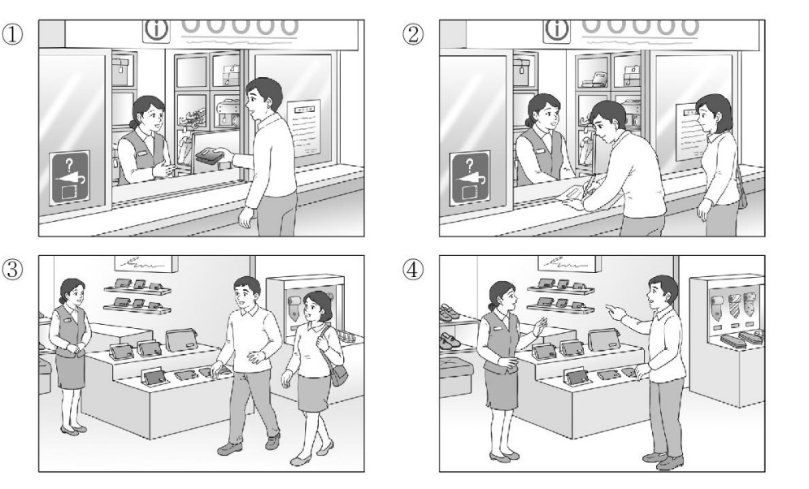
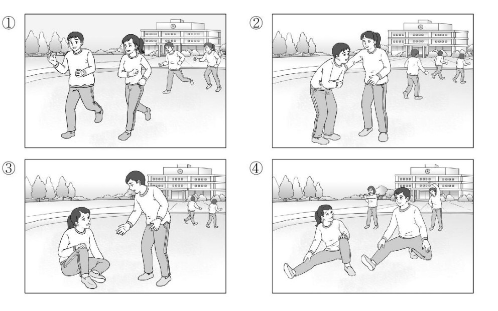
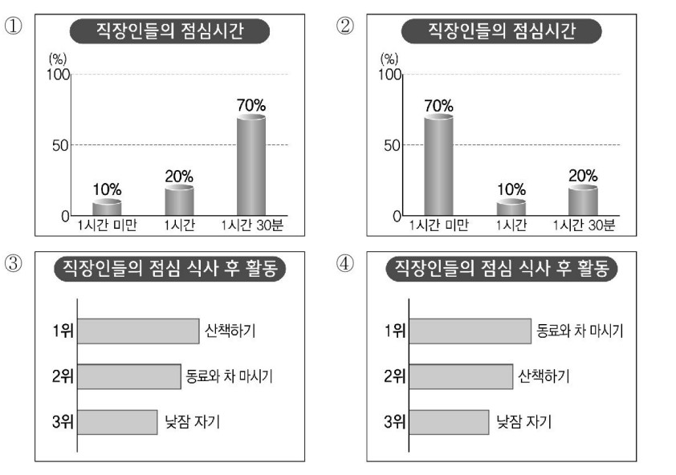

👨 남자: 이 지갑, 누가 잃어버린 것 같아요. 이 앞에 있었어요.
👩 여자: 네, 이쪽으로 주세요.
👨 Nam: Chiếc ví này dường như có người đánh rơi. Nó nằm ở ngay phía trước này.
👩 Nữ: Vâng, anh vui lòng đưa nó cho tôi nhé.
🎯 Phân tích đáp án
Tại sao chọn ①? Bối cảnh hội thoại được xác định diễn ra tại một quầy hướng dẫn hoặc quầy thông tin (biểu thị qua chữ "i" và biểu tượng đồ thất lạc trên bảng hiệu). Người nam nhặt được một chiếc ví rơi (누가 잃어버린 것 같아요) và đang tiến hành giao nộp lại cho nhân viên trực quầy. Bức tranh số 1 phác họa chính xác tình huống người nam đang cầm chiếc ví trên tay và đưa cho nữ nhân viên ở quầy tiếp tân.
- Hình 2 sai vì mô tả cảnh người nam đang điền thông tin vào một biểu mẫu giấy tờ, trong khi người nữ đứng bên cạnh quan sát.
- Hình 3 sai vì mô tả cảnh hai người đang đi dạo và xem xét các mặt hàng trưng bày bên trong một cửa hàng.
- Hình 4 sai vì mô tả cảnh người nam đang chỉ tay yêu cầu nhân viên lấy một món đồ trên kệ để mua sắm.

👩 여자: 응, 다리가 아파서 못 일어나겠어.
👨 남자: 그래? 내가 도와줄 테니까 천천히 일어나 봐.
👩 Nữ: Ừ, chân tớ đau quá nên không thể tự đứng dậy nổi.
👨 Nam: Vậy sao? Tớ sẽ hỗ trợ cậu, cậu thử từ từ đứng dậy xem sao.
🎯 Phân tích đáp án
Tại sao chọn ③? Đoạn hội thoại diễn tả một tình huống phát sinh chấn thương trong quá trình vận động. Cô gái gặp chấn thương ở khu vực chân và đang phải ngồi bệt dưới đất (다리가 아파서 못 일어나겠어). Người nam tiến đến gần, thể hiện sự quan tâm và ngỏ ý hỗ trợ đỡ cô gái đứng dậy (내가 도와줄 테니까 천천히 일어나 봐). Hình số 3 phản ánh chuẩn xác hình ảnh cô gái đang ôm chân ngồi trên mặt sân, và chàng trai đang vươn tay ra để dìu cô đứng lên.
- Hình 1 sai vì mô tả cảnh hai người đang cùng nhau chạy bộ bình thường, không xuất hiện bất kỳ dấu hiệu chấn thương nào.
- Hình 2 sai vì mô tả cảnh người nam đang ôm bụng đau đớn, trong khi người nữ đang đỡ anh ta. Chi tiết này sai lệch hoàn toàn vai trò của các nhân vật so với đoạn hội thoại.
- Hình 4 sai vì mô tả cảnh hai người đang thực hiện các động tác khởi động kéo giãn cơ thể trước khi tiến hành tập thể dục.

🎯 Phân tích đáp án
Tại sao chọn ④? Biểu đồ chính xác cần phải thỏa mãn tiêu chí sắp xếp các hoạt động sau bữa trưa dựa trên dữ kiện của bản tin:
- Vị trí dẫn đầu (가장 많았으며): '동료와 차 마시기' (Uống trà cùng đồng nghiệp).
- Tiếp nối theo sau (뒤를 이었습니다): Hạng 2 là '산책하기' (Đi dạo) và Hạng 3 là '낮잠 자기' (Ngủ trưa).
Biểu đồ thanh ngang ở Hình số 4 thể hiện chính xác tuyệt đối trật tự xếp hạng này: 1위 동료와 차 마시기 / 2위 산책하기 / 3위 낮잠 자기.
- Hình 1 & 2 sai vì đây là biểu đồ cột dọc thể hiện "Thời lượng nghỉ trưa" (점심시간). Mặc dù các con số phần trăm được nêu trong bài, nhưng sự sắp xếp các cột trong Hình 1 và 2 đều bị xáo trộn, không phản ánh đúng trật tự tỷ lệ 70% - 20% - 10% theo thông số đã cung cấp.
- Hình 3 sai vì biểu đồ thanh ngang này xếp hạng hoạt động "산책하기" (Đi dạo) lên vị trí số 1 (1위), đi ngược hoàn toàn với dữ liệu báo cáo của bản tin.
👨 남자: 그래요? 어디로 바뀌었어요?
👩 여자: _____________________________
👨 Nam: Vậy sao? Địa điểm mới được đổi sang nơi nào thế?
👩 Nữ: ( Là nhà hàng nằm ngay bên cạnh cổng chính. )
- ① Xin vui lòng nhắc lại địa điểm cho tôi.
- ② Tôi sẽ không tham gia vào buổi họp mặt tiếp theo.
- ③ Sẽ thật tốt nếu chúng ta có thể gặp nhau vào tuần này.
- ④ Là nhà hàng tọa lạc ở khu vực bên cạnh cổng chính.
🎯 Phân tích đáp án
Tại sao chọn ④? Người nam đưa ra một câu hỏi trực tiếp nhằm thu thập thông tin về địa điểm mới: "어디로 바뀌었어요?" (Đã được đổi sang nơi nào thế?). Để phản hồi chính xác, người nữ bắt buộc phải cung cấp một thông tin mang tính chất định vị địa lý cụ thể. Câu trả lời "정문 옆에 있는 식당이에요" (Là nhà hàng nằm cạnh cổng chính) hoàn thành trọn vẹn chức năng giải đáp cho câu hỏi truy vấn địa điểm này.
- ① Sai vì người nữ chính là người mang thông tin đến thông báo cho người nam, cô ấy là người NẮM RÕ VÀ CẦN PHẢI NÓI RA ĐỊA ĐIỂM, không thể đưa ra yêu cầu ngược lại "Hãy nhắc lại địa điểm cho tôi" được.
- ② Sai vì quyết định "không đi họp mặt" hoàn toàn không cung cấp lời giải đáp cho câu hỏi về "Địa điểm mới ở đâu".
- ③ Sai vì thời gian họp mặt ĐÃ ĐƯỢC ẤN ĐỊNH LÀ VÀO TUẦN NÀY (이번 주 모임). Việc bộc lộ mong muốn "Được gặp nhau vào tuần này" là sự dư thừa và lệch trọng tâm giao tiếp.
👩 여자: 그럼 토요일 아침은 어때?
👨 남자: _____________________________
👩 Nữ: Nếu vậy thì chuyển sang phương án đi vào sáng thứ Bảy, anh thấy thế nào?
👨 Nam: ( Để tôi kiểm tra thử xem hệ thống có còn vé hay không nhé. )
- ① Tôi đã lên tàu khởi hành từ lúc sáng sớm.
- ② Vì không thể mua được vé nên tôi vẫn chưa thể khởi hành.
- ③ Để tôi tiến hành kiểm tra thử xem hệ thống có còn vé hay không nhé.
- ④ Hãy tiến hành hủy bỏ tấm vé chiều thứ Sáu đi.
🎯 Phân tích đáp án
Tại sao chọn ③? Trước tình huống vé tàu chiều thứ Sáu đã hết, người nữ đưa ra một giải pháp thay thế là khung thời gian "sáng thứ Bảy". Đứng trước một đề xuất lịch trình mới, phản hồi mang tính logic và thực tiễn nhất của người nam (người phụ trách tìm vé) là phải tiếp nhận đề xuất và tiến hành khảo sát tính khả thi của nó. Lời đáp "표가 있는지 한번 알아볼게" (Để tôi kiểm tra thử xem có còn vé hay không nhé) duy trì tính liên kết chặt chẽ và thể hiện thái độ hợp tác giải quyết vấn đề.
- ① Sai vì chuyến đi VẪN CHƯA THỂ KHỞI HÀNH (Vẫn đang trong quá trình tìm vé), không thể đưa ra thông báo "đã lên tàu từ sáng sớm" (아침 일찍 기차를 탔어) ở thì quá khứ.
- ② Sai vì nguyên nhân không mua được vé chiều thứ Sáu vừa mới được xác nhận, sự việc "chưa thể đi" là kết quả hiển nhiên. Câu nói này không đóng góp giá trị giải đáp cho câu hỏi đề xuất "sáng thứ Bảy thì sao" của người nữ.
- ④ Sai vì người nam KHÔNG HỀ SỞ HỮU TẤM VÉ NÀO (표는 없는 것 같아), do đó việc yêu cầu "hủy vé chiều thứ Sáu" (취소하자) là hoàn toàn phi thực tế.
👨 남자: 그러게요. 수미 씨, 방학 계획은 세웠어요?
👩 여자: _____________________________
👨 Nam: Đúng vậy. Su-mi à, cô đã lập kế hoạch dự định gì cho kỳ nghỉ hè sắp tới chưa?
👩 Nữ: ( Tôi dự định sẽ dành thời gian để học thêm ngoại ngữ. )
- ① Công việc thuyết trình lúc nào cũng mang lại nhiều khó khăn nhỉ.
- ② Cô hãy tiến hành thiết lập kế hoạch trước tiên đi.
- ③ Tôi dự định sẽ dành thời gian để học thêm ngoại ngữ.
- ④ Mỗi khi học kỳ mới bắt đầu thì công việc sẽ trở nên vô cùng bận rộn.
🎯 Phân tích đáp án
Tại sao chọn ③? Người nam đưa ra một câu hỏi trực tiếp nhằm tìm hiểu về dự định cá nhân: "방학 계획은 세웠어요?" (Cô đã lập kế hoạch cho kỳ nghỉ chưa?). Để phản hồi chuẩn xác nhất, người nữ bắt buộc phải cung cấp một thông tin thể hiện mục tiêu hoặc hoạt động mà bản thân dự kiến thực hiện. Câu trả lời "외국어 공부를 좀 할까 해요" (Tôi dự định sẽ học thêm ngoại ngữ) là một kế hoạch cá nhân cụ thể và đáp ứng trọn vẹn yêu cầu của câu hỏi.
- ① Sai vì câu cảm thán về "khó khăn của việc thuyết trình" hoàn toàn không giải đáp cho trọng tâm câu hỏi về "kế hoạch kỳ nghỉ".
- ② Sai vì người nữ đang đóng vai trò NGƯỜI BỊ HỎI, việc cô ấy sử dụng thể mệnh lệnh yêu cầu đối phương "Cô/Anh hãy thử lập kế hoạch trước đi" (세워 보세요) là sai lệch vị thế giao tiếp.
- ④ Sai vì chủ đề thảo luận đang xoay quanh KỲ NGHỈ SẮP TỚI (방학), không phải là việc đưa ra nhận định về mức độ bận rộn khi "học kỳ mới bắt đầu" (학기가 시작되면).
👩 여자: 아, 그 시골에서 할머니랑 사는 아이 이야기?
👨 남자: _____________________________
👩 Nữ: À, có phải anh đang nhắc đến câu chuyện về đứa bé sinh sống cùng người bà ở dưới vùng quê không?
👨 Nam: ( Ừ đúng rồi. Theo dõi tương tác của hai người họ mà tôi đã bật cười rất nhiều đấy. )
- ① Ừ. Tôi đã từng có khoảng thời gian sinh sống ở vùng quê.
- ② Không đâu. Bộ phim quá nhàm chán khiến tôi đã ngủ gật.
- ③ Không đâu. Tôi hoàn toàn không có quỹ thời gian để theo dõi phim truyền hình.
- ④ Ừ đúng rồi. Theo dõi tương tác của hai người họ mà tôi đã bật cười rất nhiều đấy.
🎯 Phân tích đáp án
Tại sao chọn ④? Người nữ đưa ra một câu hỏi nhằm xác minh nội dung bộ phim mà người nam đang đề cập: "Có phải câu chuyện về đứa bé sống cùng bà không?". Để duy trì cuộc hội thoại, người nam cần thực hiện hai thao tác: Thứ nhất, xác nhận sự chính xác ("Đúng" - 응); Thứ hai, cung cấp thêm những đánh giá củng cố cho quan điểm "thú vị" (재미있더라) ban đầu. Phản hồi "응. 두 사람 보면서 한참 웃었어" (Ừ đúng rồi. Nhìn hai người họ mà tôi đã cười rất nhiều) hoàn thiện xuất sắc cả hai chức năng giao tiếp này.
- ① Sai vì người nữ đang yêu cầu xác minh về NỘI DUNG CỦA BỘ PHIM (아이 이야기?), không phải đang khai thác "kinh nghiệm sống ở quê" cá nhân của người nam (시골에서 산 적이 있어).
- ② Sai vì người nam vừa mới khẳng định một cách mạnh mẽ là bộ phim RẤT THÚ VỊ (진짜 재미있더라), việc quay xe chê bai "nhàm chán đến mức ngủ gật" (너무 지루해서 졸았어) là sự mâu thuẫn phi logic.
- ③ Sai vì người nam chính là người CHỦ ĐỘNG KHỞI XƯỚNG VÀ KHEN PHIM (새로 시작한 드라마 말이야), minh chứng việc anh ta đã xem tác phẩm này. Việc tự phủ nhận "không có thời gian xem" (볼 시간이 없었어) là sai sự thật.
👨 남자: 어디 봅시다. 음, 질문 수가 좀 많은 것 같네요.
👩 여자: _____________________________
👨 Nam: Để tôi xem qua. Ừm, tôi nhận thấy số lượng câu hỏi có vẻ hơi nhiều thì phải.
👩 Nữ: ( Tôi sẽ tiến hành rà soát và điều chỉnh lại hệ thống câu hỏi ạ. )
- ① Mức độ hài lòng của chương trình thuộc diện khá cao.
- ② Kết quả của đợt khảo sát đã chính thức được công bố.
- ③ Có vẻ như số lượng chương trình khá khiêm tốn.
- ④ Tôi sẽ tiến hành rà soát và điều chỉnh lại hệ thống câu hỏi ạ.
🎯 Phân tích đáp án
Tại sao chọn ④? Bối cảnh giao tiếp diễn ra giữa nhân viên cấp dưới (Người nữ) trình bày sản phẩm và cấp trên (Người nam) đưa ra đánh giá. Người nam đã chỉ ra một điểm bất cập cần khắc phục trong bản thảo: "질문 수가 좀 많은 것 같네요" (Số lượng câu hỏi hơi nhiều). Đứng trước lời phê bình nghiệp vụ từ cấp trên, phản ứng chuyên nghiệp và bắt buộc của người nhân viên là tiếp thu và cam kết sửa chữa. Câu phản hồi "질문을 다시 정리해 보겠습니다" (Tôi sẽ tiến hành điều chỉnh lại các câu hỏi) thể hiện thái độ cầu thị và hướng giải quyết chuẩn xác.
- ①, ② Sai vì phiếu khảo sát VẪN ĐANG TRONG GIAI ĐOẠN THIẾT KẾ VÀ KIỂM DUYỆT BẢN THẢO (만들어 봤는데요), chưa được phát hành tới tay người dùng. Do đó, việc công bố "mức độ hài lòng cao" hay "kết quả khảo sát đã ra" là phi logic về mặt tiến độ công việc.
- ③ Sai vì vấn đề mà Trưởng nhóm đang phản ánh là SỐ LƯỢNG CÂU HỎI QUÁ NHIỀU (질문 수가 많은), hoàn toàn không liên quan đến việc đánh giá "số lượng chương trình ít" (프로그램이 적은).
👩 여자: 그렇죠? 판매도 한다니까 우리 하나 사 가요.
👨 남자: 그럼 저 파란색 그릇은 어때요?
👩 여자: 괜찮네요. 제가 가서 얼마인지 알아볼게요.
👩 Nữ: Đúng vậy. Nghe nói cơ sở này cũng tiến hành bán lẻ sản phẩm, chúng ta hãy mua một chiếc mang về nhé.
👨 Nam: Vậy chiếc bát màu xanh lam đằng kia thì cô thấy thế nào?
👩 Nữ: Trông khá ổn đấy. Để tôi ra đằng kia hỏi thăm xem giá trị của nó là bao nhiêu nhé.
- ① Tiến hành lựa chọn màu sắc của chiếc bát.
- ② Đặt câu hỏi tìm hiểu về giá thành của chiếc bát.
- ③ Thực hiện việc thay đổi chiếc bát sẽ được trưng bày.
- ④ Thực hiện thao tác đưa chiếc bát cho người nam.
🎯 Phân tích đáp án
Tại sao chọn ②? Đề bài yêu cầu xác định "Hành động TIẾP THEO của người Nữ". Ở câu thoại kết thúc, người nữ chủ động đưa ra tuyên bố về hành vi tiếp theo của mình: "제가 가서 얼마인지 알아볼게요" (Để tôi ra đó tìm hiểu xem giá bao nhiêu nhé). Do đó, hành động ngay lập tức tiếp theo mà cô ấy sẽ thực thi là tiến đến khu vực nhân viên để Hỏi giá của chiếc bát (그릇 가격을 물어본다). Đáp án ② phản ánh chính xác thông tin này.
- ① Sai vì màu sắc của chiếc bát ĐÃ ĐƯỢC NGƯỜI NAM LỰA CHỌN XONG (파란색 그릇 - chiếc bát màu xanh), bước chọn màu đã hoàn tất.
- ③ Sai vì vai trò của hai nhân vật là KHÁCH HÀNG THAM QUAN MUA SẮM, họ không sở hữu tư cách quản lý để "thay đổi chiếc bát trưng bày" (전시할 그릇을 바꾼다) của triển lãm.
- ④ Sai vì người nữ đang chuẩn bị ĐI HỎI GIÁ (가서 알아볼게요), chiếc bát hiện vẫn đang nằm trên kệ trưng bày chứ cô chưa cầm trên tay để "đưa cho người nam" (남자에게 그릇을 준다).
👩 여자: 네. 그런데 카드는 바로 나오나요?
👨 남자: 그럼요. 서류 작성은 제가 도와 드릴게요. 신분증 주시겠어요?
👩 여자: 네, 잠깐만요.
👩 Nữ: Vâng. Xin hỏi quy trình phát hành thẻ có được hoàn tất ngay lập tức không?
👨 Nam: Đương nhiên rồi ạ. Tôi sẽ hỗ trợ quý khách thực hiện việc điền hồ sơ. Quý khách vui lòng cung cấp chứng minh thư được không ạ?
👩 Nữ: Vâng, xin đợi một lát.
- ① Tiến hành tìm kiếm hồ sơ tài liệu.
- ② Thực hiện thao tác lấy chứng minh thư ra.
- ③ Đưa chiếc thẻ cho người đối diện xem.
- ④ Điền thông tin vào đơn đăng ký.
🎯 Phân tích đáp án
Tại sao chọn ②? Yêu cầu của câu hỏi là xác định "Hành động TIẾP THEO của người nữ". Nhân viên nam đã đưa ra một yêu cầu vật lý cụ thể để phục vụ công tác hành chính: "신분증 주시겠어요?" (Quý khách vui lòng cung cấp chứng minh thư được không?). Người nữ đã xác nhận và yêu cầu đối phương chờ đợi để cô thực hiện thao tác: "네, 잠깐만요" (Vâng, xin đợi một lát). Hành động ngay lập tức tiếp theo của cô là mở ví/túi xách để Lấy chứng minh thư ra (신분증을 꺼낸다) nhằm bàn giao cho nhân viên. Đáp án ② hoàn toàn tuân thủ logic hành vi này.
- ① Sai vì người nữ đóng vai trò là KHÁCH HÀNG, việc "tìm kiếm hồ sơ tài liệu" phục vụ công tác hành chính là nhiệm vụ của nhân viên tổ chức.
- ③ Sai vì chiếc thẻ này CHƯA ĐƯỢC PHÁT HÀNH (카드는 바로 나오나요?). Người nữ chưa sở hữu thẻ nên không thể thực hiện hành vi "đưa thẻ cho người nam xem" (카드를 보여 준다).
- ④ Sai vì thao tác "điền đơn đăng ký" (서류 작성) đã được nhân viên nam cam kết SẼ LÀM THAY ĐỂ HỖ TRỢ KHÁCH HÀNG (제가 도와 드릴게요). Người nữ không cần thiết phải tự thực hiện việc này.
👩 여자: 어, 그러네. 건전지가 어디 있었던 것 같은데.......
👨 남자: 안방 서랍 안에 몇 개 있을 거야. 가져올게.
👩 여자: 아니야. 내가 찾아올 테니까 너는 시계 좀 내려 줘.
👩 Nữ: Ồ, đúng vậy nhỉ. Hình như trong nhà vẫn còn pin cất ở đâu đó thì phải...
👨 Nam: Chắc là có vài cục ở trong ngăn kéo phòng ngủ chính đấy. Để em đi lấy cho.
👩 Nữ: Không cần đâu. Để chị đi tìm mang ra cho, em cứ tháo đồng hồ xuống đi nhé.
- ① Đi lấy pin.
- ② Xác nhận lại thời gian hiện tại.
- ③ Tháo đồng hồ từ trên tường xuống.
- ④ Cất pin vào bên trong ngăn kéo.
🎯 Phân tích đáp án
Tại sao chọn ①? Câu hỏi yêu cầu xác định "Hành động TIẾP THEO của người nữ". Mặc dù người nam ngỏ ý đi lấy pin, người nữ đã từ chối và chủ động nhận nhiệm vụ: "아니야. 내가 찾아올 테니까 너는 시계 좀 내려 줘" (Không cần. Để chị đi tìm (mang ra) cho, em tháo đồng hồ xuống đi). Do đó, hành động ngay lập tức tiếp theo mà người nữ sẽ thực hiện là Đi lấy pin (건전지를 가지러 간다). Đáp án ① là sự lựa chọn duy nhất đúng.
- ② Sai vì đồng hồ đã ngừng chạy do hết pin (벽시계가 안 가는 것 같은데), mục đích hiện tại là thay pin chứ không phải để "xác nhận thời gian hiện tại" (현재 시간을 확인한다).
- ③ Sai vì nhiệm vụ tháo đồng hồ từ trên tường xuống (시계 좀 내려 줘) đã được người nữ phân công cho NGƯỜI NAM thực hiện.
- ④ Sai vì người nữ đang cần ĐI TÌM LẤY PIN TỪ NGĂN KÉO RA ĐỂ THAY, chứ không phải đi "cất pin vào ngăn kéo" (서랍에 넣는다).
👩 여자: 지금 자료를 출력해 드릴까요?
👨 남자: 네, 바로 뽑아 주세요. 거래처에 시간과 장소는 알려 줬죠?
👩 여자: 어제 확인 이메일 보냈습니다.
👩 Nữ: Bây giờ tôi in tài liệu ra cho anh luôn nhé?
👨 Nam: Vâng, cô in ra ngay giúp tôi. Cô đã thông báo thời gian và địa điểm cho phía đối tác rồi đúng không?
👩 Nữ: Hôm qua tôi đã gửi email xác nhận rồi ạ.
- ① Soạn thảo tài liệu cuộc họp.
- ② In ấn tài liệu cuộc họp.
- ③ Đi gặp nhân viên của công ty đối tác.
- ④ Thông báo lịch trình cho công ty đối tác.
🎯 Phân tích đáp án
Tại sao chọn ②? Đề bài yêu cầu tìm "Hành động TIẾP THEO của người nữ". Khi người nam hỏi về tài liệu và bày tỏ mong muốn xem trước, người nữ đã chủ động đề xuất: "지금 자료를 출력해 드릴까요?" (Bây giờ tôi in tài liệu ra cho anh nhé?). Người nam xác nhận: "네, 바로 뽑아 주세요" (Vâng, cô in ra ngay giúp tôi). Sau lời xác nhận này, hành động hiển nhiên mà người nữ phải thực hiện là In tài liệu cuộc họp (회의 자료를 출력한다). Đáp án ② là sự suy luận chuẩn xác.
- ① Sai vì tài liệu ĐÃ ĐƯỢC CHUẨN BỊ XONG TỪ TRƯỚC RỒI (nếu chưa có thì không thể đề xuất in ấn ngay lập tức).
- ③ Sai vì cuộc họp với đối tác là sự kiện sẽ diễn ra SAU ĐÓ (회의 전에 먼저 보고 싶은데요). Trước mắt cô cần phải in tài liệu cho sếp xem đã.
- ④ Sai vì việc thông báo thời gian và địa điểm (lịch trình) cho đối tác ĐÃ ĐƯỢC NGƯỜI NỮ HOÀN TẤT VÀO HÔM QUA (어제 확인 이메일 보냈습니다).
👨 남자: 봉사 활동을 소개해 주는 인터넷 사이트가 있는데 알려 줄까요?
👩 여자: 네, 좋아요. 민수 씨도 이용해 본 적이 있어요?
👨 남자: 그럼요. 종류도 다양하고 기간도 선택할 수 있어서 편해요.
👨 Nam: Có một trang web chuyên giới thiệu về các hoạt động tình nguyện đấy, tôi cho cô thông tin nhé?
👩 Nữ: Vâng, thế thì tốt quá. Min-su à, anh đã từng sử dụng trang web đó bao giờ chưa?
👨 Nam: Tất nhiên rồi. Trên đó phân loại rất đa dạng và có thể tự chọn khoảng thời gian tham gia nên vô cùng tiện lợi.
- ① Người nam đang có dự định bắt đầu tham gia các hoạt động tình nguyện.
- ② Người nữ đang băn khoăn trăn trở về vấn đề hoạt động tình nguyện.
- ③ Người nữ đã từng sử dụng qua trang web tìm kiếm hoạt động tình nguyện.
- ④ Người nam đã từng tham gia hoạt động tình nguyện cùng với người nữ trong quá khứ.
🎯 Phân tích đáp án
Tại sao chọn ②? Ngay câu mở đầu, người nữ đã bày tỏ sự trăn trở của bản thân: "봉사 활동을 해 보고 싶은데 처음이라 뭘 해야 할지 모르겠어요" (Tôi muốn làm tình nguyện nhưng vì là lần đầu nên không biết phải làm gì). Trạng thái hoang mang, không biết bắt đầu từ đâu chính là biểu hiện của việc "đang suy nghĩ, trăn trở" (고민하고 있다). Do đó, nhận định "Người nữ đang trăn trở vì vấn đề hoạt động tình nguyện (여자는 봉사 활동 때문에 고민하고 있다)" phản ánh hoàn toàn chính xác thực tế.
- ① Sai vì người nam ĐÃ TỪNG THAM GIA TÌNH NGUYỆN VÀ SỬ DỤNG TRANG WEB ĐÓ NHIỀU LẦN RỒI (그럼요... 편해요), anh ta đóng vai trò là người hướng dẫn, không phải là người "đang định bắt đầu" (시작하려고 한다).
- ③ Sai vì người nữ hoàn toàn MÙ TỊT VỀ THÔNG TIN, cô ấy mới được người nam giới thiệu cho trang web này nên cô ấy "chưa từng sử dụng qua" (이용해 봤다 là sai).
- ④ Sai vì người nữ khẳng định đây là LẦN ĐẦU TIÊN (처음이라) cô có ý định đi làm tình nguyện. Việc khẳng định hai người "đã từng làm chung trong quá khứ" (함께 봉사 활동을 한 적이 있다) là sai lệch hoàn toàn.
- ① Công tác kiểm tra bảo trì dự kiến sẽ được tiến hành vào ngày mai.
- ② Toàn bộ công tác kiểm tra sẽ được hoàn tất vào buổi sáng.
- ③ Chuông báo động khẩn cấp sẽ reo lên nhiều lần trong quá trình kiểm tra.
- ④ Ngay khi công tác kiểm tra bắt đầu, cư dân phải di tản ra bên ngoài.
🎯 Phân tích đáp án
Tại sao chọn ③? Loa phát thanh cảnh báo rất rõ ràng về một hiện tượng sẽ xảy ra trong quá trình bảo trì: "오늘 점검 중에는 비상벨이 여러 번 울릴 예정이니" (Trong quá trình kiểm tra ngày hôm nay, chuông báo động khẩn cấp dự kiến sẽ reo lên nhiều lần). Thông tin cảnh báo này trùng khớp tuyệt đối với nội dung của đáp án ③: "비상벨이 여러 번 울릴 것이다 (Chuông báo động khẩn cấp sẽ reo lên nhiều lần)".
- ① Sai vì loa thông báo lịch kiểm tra là vào NGÀY HÔM NAY (오늘은... 점검이 있습니다), không phải là "vào ngày mai" (내일 할 예정).
- ② Sai vì lịch kiểm tra được chia làm hai ca, ca chiều dành cho tòa 6 đến 10 sẽ kéo dài đến tận 4 GIỜ CHIỀU (오후 한 시부터 네 시까지). Do đó, việc bảo "kết thúc toàn bộ vào buổi sáng" (오전에 점검이 모두 끝난다) là sai thông số thời gian.
- ④ Sai vì ban quản lý yêu cầu cư dân "đừng hoảng hốt và HÃY TIẾP TỤC CÁC HOẠT ĐỘNG SINH HOẠT BÌNH THƯỜNG" (놀라지 마시고 하던 일을 계속하시기 바랍니다). Tuyệt đối không có lệnh sơ tán "bắt buộc phải chạy ra ngoài" (밖으로 나가야 한다).
- ① Đã ghi nhận trường hợp có người bị thương do sự cố rơi biển hiệu quảng cáo.
- ② Cơn bão dự báo sẽ tăng cường sức mạnh và trở nên dữ dội hơn vào đêm nay.
- ③ Đặc điểm nổi bật nhất của cơn bão lần này là gây ra lượng mưa khổng lồ.
- ④ Khu vực đảo Jeju hiện tại vẫn chưa chịu sự ảnh hưởng trực tiếp từ cơn bão.
🎯 Phân tích đáp án
Tại sao chọn ①? Bản tin cung cấp dữ liệu thiệt hại rất cụ thể: "간판이 떨어져 시민 두 명이 큰 부상을 입기도 했습니다" (Đã có sự cố rơi biển hiệu khiến hai người dân bị thương nặng). Việc có công dân bị thương vong do rơi biển hiệu hoàn toàn tương đồng với nội dung ở đáp án ①: "간판이 떨어져서 다친 사람이 있다 (Đã có người bị thương do rơi biển hiệu quảng cáo)".
- ② Sai vì dự báo khí tượng khẳng định cơn bão sẽ đi qua Biển Đông và SUY YẾU TAN BIẾN VÀO ĐÊM NAY (오늘 밤 늦게... 사라지겠습니다), trái ngược hoàn toàn với nhận định "sẽ trở nên mạnh hơn" (더 강해질 것이다).
- ③ CẨN THẬN BẪY: Mặc dù bão có gây mưa, nhưng đặc điểm tàn phá nặng nề nhất được bản tin nhấn mạnh là do SỨC GIÓ (이번 태풍은 특히 바람으로 인한 피해가 큽니다), không phải là "lượng mưa lớn" (비가 많이 오는 것) như đáp án đưa ra.
- ④ Sai vì bản tin xác nhận ở ngay câu đầu tiên: "현재 태풍은 제주도를 지나고 있습니다" (Hiện tại cơn bão ĐANG CÀN QUÉT QUA ĐẢO JEJU). Khẳng định đảo Jeju "chưa chịu ảnh hưởng" (아직 영향을 받고 있지 않다) là sai thực tế khách quan.
👨 남자: 우선 자격증이 있어야 하고요. 위험물을 다루니까 꼼꼼하고 침착한 성격이 좋습니다. 요즘은 음악에 맞춰 불꽃을 터뜨리니까 예술적 감각이 있으면 더 좋고요.
👨 Nam (Đạo diễn): Yêu cầu tiên quyết đầu tiên là phải sở hữu chứng chỉ hành nghề. Do đặc thù công việc phải xử lý các vật liệu nguy hiểm dễ cháy nổ, nên những người có tính cách cẩn thận, tỉ mỉ và điềm tĩnh sẽ rất phù hợp. Hơn thế nữa, các màn trình diễn pháo hoa ngày nay thường được kích nổ đồng điệu theo nhịp điệu của âm nhạc, nên nếu ứng viên sở hữu thêm gu thẩm mỹ nghệ thuật thì sẽ là một lợi thế vô cùng lớn.
- ① Tại Hàn Quốc, số lượng người theo đuổi ngành nghề này là rất đông đảo.
- ② Những cá nhân có tính cách tỉ mỉ, cẩn thận hoàn toàn không phù hợp với tính chất của công việc này.
- ③ Để hành nghề trong lĩnh vực này, việc sở hữu chứng chỉ chuyên môn là điều không bắt buộc.
- ④ Trong quá trình làm nghề, việc sở hữu gu thẩm mỹ nghệ thuật sẽ mang lại những lợi ích hỗ trợ vô cùng đắc lực.
🎯 Phân tích đáp án
Tại sao chọn ④? Chuyên gia đạo diễn pháo hoa chia sẻ về các tố chất cần thiết, trong đó có nhấn mạnh ở câu cuối: "음악에 맞춰 불꽃을 터뜨리니까 예술적 감각이 있으면 더 좋고요" (Vì phải bắn pháo hoa khớp với nhạc nên nếu có khiếu thẩm mỹ nghệ thuật thì sẽ càng tốt hơn). Cụm từ "có thì sẽ tốt hơn" (있으면 더 좋고요) mang ý nghĩa tương đương với "Nó sẽ mang lại sự hỗ trợ hữu ích cho công việc" (예술적 감각이 도움이 된다). Đáp án ④ phản ánh chính xác 100% quan điểm này.
- ① Sai vì nữ phóng viên đã khẳng định ngay từ đầu: "한국에는 불꽃 연출가가 몇 분 안 계신데" (Ở Hàn Quốc SỐ LƯỢNG ĐẠO DIỄN PHÁO HOA ĐẾM TRÊN ĐẦU NGÓN TAY/RẤT ÍT). Đáp án bảo "người làm nghề này rất đông" (하는 사람이 많다) là trái ngược thực tế.
- ② CẨN THẬN BẪY LẬT NGƯỢC: Do tính chất nguy hiểm của chất nổ, đạo diễn yêu cầu "꼼꼼하고 침착한 성격이 좋습니다" (Người có tính CẨN THẬN VÀ ĐIỀM TĨNH SẼ RẤT TỐT/PHÙ HỢP). Đáp án ② dám phán "Người cẩn thận KHÔNG PHÙ HỢP" (꼼꼼한 사람은 맞지 않는다) là sai nghiêm trọng.
- ③ Sai vì điều kiện tiên quyết mang tính pháp lý được đưa ra đầu tiên là "우선 자격증이 있어야 하고요" (Đầu tiên là BẮT BUỘC PHẢI CÓ CHỨNG CHỈ HÀNH NGHỀ). Việc khẳng định "không cần chứng chỉ" (자격증은 필요 없다) là sai quy định.
👩 여자: 음, 저는 그것보다 꽃이 많이 있는 화분이 좋은데.......
👨 남자: 꽃은 금방 지고 지저분해져요. 이걸로 하는 게 어때요?
👩 Nữ: Ừm, nhưng cá nhân em lại ưu tiên những chậu cây rực rỡ và có nhiều hoa hơn...
👨 Nam: Hoa thì tàn rất nhanh, sau đó lại còn rơi rụng làm bẩn nhà nữa. Chúng ta cứ chốt lấy chậu cây này đi, em thấy sao?
- ① Các giống hoa có tuổi thọ nở lâu dài là sự lựa chọn tối ưu.
- ② Mong muốn tìm mua một loại thực vật dễ dàng trong khâu chăm sóc và quản lý.
- ③ Hoạt động trồng trọt và chăm sóc thực vật bắt buộc phải được tiến hành ở không gian ngoài trời.
- ④ Trong không gian nội thất của ngôi nhà cần thiết phải được bài trí những chậu cây có nhiều hoa.
🎯 Phân tích đáp án
Tại sao chọn ②? Yêu cầu của câu hỏi là xác định "Suy nghĩ trọng tâm của người Nam". Ngay từ câu đầu tiên, người nam đã bày tỏ sự ưu ái đặc biệt dành cho một chậu cây vì tính chất: "물을 자주 안 줘도 된다니까 키우기 편하겠어요" (Vì không cần phải tưới nước thường xuyên nên việc nuôi trồng sẽ rất nhàn nhã). Khi người nữ gạ gẫm đổi sang cây có hoa, anh ta lập tức từ chối vì hoa "tàn nhanh và gây bẩn/bừa bộn" (금방 지고 지저분해져요). Việc né tránh sự bừa bộn và ưu tiên cây không tốn công tưới nước chứng tỏ mục tiêu hàng đầu của người nam là: "Muốn mua một loài thực vật dễ dàng trong việc chăm sóc và quản lý (관리가 쉬운 식물을 사고 싶다)". Đáp án ② là sự thấu hiểu tuyệt đối tâm lý nhân vật này.
- ① Sai vì người nam mang tư tưởng BÀI XÍCH HOA do đặc tính mau tàn của nó. Hoàn toàn không có chuyện anh ta đưa ra lời khuyên "Hoa nở lâu thì tốt" (오래 볼 수 있는 꽃이 좋다).
- ③ Sai vì đoạn hội thoại chỉ xoay quanh việc lựa chọn chủng loại cây để mua mang về, tuyệt nhiên không có bất kỳ cuộc tranh luận nào liên quan đến quy định vị trí không gian trồng trọt là "phải trồng ở ngoài nhà" (집 밖에서 키워야 한다).
- ④ Sai vì khao khát "Trong nhà phải có chậu nhiều hoa" (꽃이 많이 있는 화분이 좋은데) là sở thích cá nhân của NGƯỜI NỮ, trong khi đó người Nam kịch liệt phản đối ý tưởng này.
👩 여자: 신청자를 잘 알면 요구에 맞는 수업을 해 줄 수 있으니까 그렇지.
👨 남자: 그런 건 따로 물어보면 되지. 정보를 너무 많이 요구하는 것 같아.
👩 Nữ: Phía ban tổ chức cần thu thập thông tin để hiểu rõ về học viên, từ đó mới có cơ sở để thiết kế và cung cấp các bài giảng đáp ứng đúng nhu cầu của họ chứ.
👨 Nam: Những vấn đề mang tính chất cá nhân như vậy họ hoàn toàn có thể khảo sát riêng sau cơ mà. Việc bắt ép khai báo quá nhiều thông tin trên đơn như thế này theo tôi là một sự đòi hỏi thái quá.
- ① Sẽ hợp lý hơn nếu trung tâm tinh giản bớt lượng thông tin bắt buộc phải khai báo trên đơn đăng ký.
- ② Trung tâm cần phải cung cấp các hướng dẫn chi tiết về cách thức điền đơn đăng ký cho học viên.
- ③ Các lớp học bắt buộc phải được thiết kế và điều chỉnh sao cho tương thích với nhu cầu thực tế của người đăng ký.
- ④ Việc công khai trước nội dung chi tiết của các bài giảng cho học viên nắm bắt là một phương án tối ưu.
🎯 Phân tích đáp án
Tại sao chọn ①? Xuyên suốt đoạn hội thoại, người nam liên tục bày tỏ sự bất mãn và phàn nàn về thiết kế của tờ đơn đăng ký: "신청서에 쓸 게 너무 많다" (Lượng thông tin phải điền vào đơn là quá nhiều) và "정보를 너무 많이 요구하는 것 같아" (Họ đang yêu cầu cung cấp quá nhiều thông tin cá nhân). Trạng thái khó chịu vì phải khai báo quá chi tiết này đồng nghĩa với mong muốn: "Cần tinh giản/giảm bớt lượng thông tin yêu cầu điền trên đơn đăng ký (신청서에 쓸 정보를 줄이면 좋겠다)". Đáp án ① truyền tải trọn vẹn sự bất bình của người nam.
- ② Sai vì người nam than vãn do bản thân tờ đơn QUÁ DÀI DÒNG VÀ ĐÒI HỎI NHIỀU THÔNG TIN BẢO MẬT NHƯ NGHỀ NGHIỆP, chứ anh ta KHÔNG bị mù chữ hay gặp khó khăn đến mức cần ai đó "hướng dẫn cách viết đơn" (쓰는 방법을 안내해야 한다).
- ③ Sai vì lập luận "Nắm bắt thông tin học viên để thiết kế lớp học ĐÁP ỨNG ĐÚNG NHU CẦU" (요구에 맞는 수업을 해 줄 수 있으니까) là lý lẽ do NGƯỜI NỮ đưa ra nhằm bào chữa cho sự dài dòng của tờ đơn. Người nam đã gạt bỏ lý lẽ này.
- ④ Sai vì vấn đề trọng tâm gây ra cuộc tranh luận là TỜ ĐƠN ĐĂNG KÝ QUÁ DÀI. Hoàn toàn không có bất kỳ ý kiến nào thảo luận về việc "Nội dung bài giảng có được công khai trước hay không" (수업 내용을 미리 알려 주는).
👨 남자: 직접 보고 사는 게 어때요?
👩 여자: 전문가가 추천한 거예요. 그리고 책은 무거워서 사서 들고 오려면 힘들어요.
👨 남자: 그래도 애들이 볼 거니까 내용을 먼저 살펴보고 사야지요.
👨 Nam: Anh nghĩ việc đi đến tận nơi để tận mắt kiểm tra rồi mới mua chẳng phải sẽ tối ưu hơn sao?
👩 Nữ: Những cuốn sách này đều nằm trong danh mục được các chuyên gia giáo dục khuyến nghị rồi nên anh không cần lo đâu. Hơn nữa, sách giấy thường có khối lượng rất nặng, nếu tự đi mua rồi khuân vác về nhà thì sẽ vô cùng vất vả mất sức đấy.
👨 Nam: Dẫu có là chuyên gia giới thiệu đi chăng nữa, thì đây là những nội dung mà chính các con chúng ta sẽ trực tiếp đọc và tiếp thu, nên bổn phận của cha mẹ là bắt buộc phải tận tay lật xem và rà soát kỹ lưỡng nội dung trước khi quyết định mua.
- ① Sách giáo dục dành cho trẻ em bắt buộc phải đáp ứng tiêu chí có khối lượng nhẹ.
- ② Các bậc phụ huynh nên ưu tiên phương thức mua sách trực tuyến (online) khi sắm sách cho con cái.
- ③ Đối với sách trẻ em, những lời khuyên và danh mục khuyến nghị từ giới chuyên gia là yếu tố quan trọng mang tính quyết định.
- ④ Phương án tốt nhất khi mua sách trẻ em là cha mẹ phải được trực tiếp thẩm định và kiểm duyệt nội dung trước khi chốt hạ.
🎯 Phân tích đáp án
Tại sao chọn ④? Yêu cầu của câu hỏi là truy xuất "Suy nghĩ trọng tâm của người Nam". Người nam kịch liệt phản đối phương án mua sách online nhàn hạ của người nữ. Anh ta liên tục khẳng định quan điểm khắt khe của một người làm cha mẹ: "직접 보고 사는 게 어때요?" (Hay là chúng ta đi đến tận nơi TẬN MẮT XEM rồi hãy mua?) và câu chốt hạ "내용을 먼저 살펴보고 사야지요" (Phải TRỰC TIẾP KIỂM DUYỆT nội dung trước rồi mới được mua). Triết lý giáo dục "Không tin mua qua mạng, phải cầm tận tay xem tận mắt nội dung" này được phản ánh hoàn hảo trong đáp án ④: "아이들 책은 직접 본 후에 사는 게 좋다 (Sách trẻ em tốt nhất là nên XEM TRỰC TIẾP rồi mới mua)".
- ① Sai vì vấn đề "Sách có khối lượng rất nặng" (책은 무거워서) là lời than vãn của NGƯỜI NỮ nhằm viện cớ biện minh cho sự lười biếng không muốn ra nhà sách. Người nam sẵn sàng chấp nhận khuân vác cực nhọc miễn là được kiểm duyệt nội dung.
- ② Sai vì phương án "Mua sách trực tuyến" (온라인으로 주문해 줄래요?) là đề xuất của NGƯỜI NỮ. Người nam đang ra sức bác bỏ đề xuất này.
- ③ Sai vì luận điểm ỷ lại vào "Sự giới thiệu của chuyên gia" (전문가가 추천한 거예요) cũng là sự ngụy biện của NGƯỜI NỮ. Người nam không quan tâm chuyên gia nói gì, anh ta chỉ tin vào sự kiểm duyệt trực tiếp của chính người làm cha mẹ.
👨 남자: 저는 청취자가 누구인가를 먼저 생각합니다. 우리 방송을 듣는 분들은 보통 사람들이거든요. 그래서 저는 일반인의 수준에서 전문가들에게 끊임없이 질문합니다. 어려운 표현이 나오면 다시 설명해 달라고 부탁하기도 하고요.
👨 Nam (Nhà báo): Bí quyết của tôi nằm ở việc tôi luôn đặt câu hỏi trọng tâm: Đối tượng thính giả mà chương trình đang phục vụ thực sự là ai? Đại đa số những thính giả đang lắng nghe sóng phát thanh của chúng ta đều là những người dân lao động phổ thông bình thường. Chính vì nhận thức được điều đó, nên trong quá trình phỏng vấn, tôi luôn tự hạ mình xuống và đặt câu hỏi cho các chuyên gia học giả bằng lăng kính tư duy và trình độ của một người dân bình thường. Thậm chí, mỗi khi họ lỡ lời sử dụng những thuật ngữ chuyên ngành phức tạp, tôi sẵn sàng cắt ngang và yêu cầu họ phải diễn giải lại vấn đề đó bằng một ngôn ngữ bình dân và dễ hiểu nhất có thể.
- ① Các chương trình thời sự chính luận với bản chất khô khan sẽ vấp phải muôn vàn thách thức để có thể giành được sự yêu mến từ đại chúng bình dân.
- ② Các vấn đề thời sự chính luận cần thiết phải được diễn giải và truyền tải bằng lăng kính tư duy ngang tầm với mức độ nhận thức của người dân bình thường.
- ③ Bản thân nhà báo đang nung nấu tham vọng sản xuất ra một chương trình thời sự mang tính chất tương tác trực tiếp với thính giả.
- ④ Người đảm nhận vai trò dẫn dắt chương trình thời sự mang trên vai trọng trách bắt buộc phải giải đáp mọi câu hỏi thắc mắc do thính giả gửi về đài.
🎯 Phân tích đáp án
Tại sao chọn ②? Người nam (Nhà báo) giải thích bí quyết thành công của chương trình là nhờ nghệ thuật truyền đạt thông tin thấu cảm. Triết lý làm nghề của ông là: "일반인의 수준에서 전문가들에게 끊임없이 질문합니다" (Tôi luôn liên tục đặt câu hỏi cho các chuyên gia dựa trên NỀN TẢNG TRÌNH ĐỘ (Lăng kính) CỦA NGƯỜI DÂN BÌNH THƯỜNG). Việc yêu cầu chuyên gia phải giải thích lại những từ ngữ phức tạp sao cho dân thường dễ hiểu chính là hành động "Truyền đạt vấn đề thời sự theo đúng góc nhìn/tầm mắt của người dân (일반인의 눈높이에서 시사 문제를 전달해야 한다)". Đáp án ② là sự thăng hoa hoàn hảo trong việc khái quát hóa tư tưởng của nhà báo.
- ① Sai vì ngay từ câu mở đầu, MC đã ca tụng sự THÀNH CÔNG RỰC RỠ (인기를 끄는 이유는 뭘까요? - Lý do nào giúp chương trình HÚT KHÁCH như vậy?) của bản tin thời sự này. Nhận định "Thời sự rất khó nổi tiếng đối với dân thường" (인기를 얻기 어렵다) là sự phủ nhận thành quả của chương trình.
- ③ Sai vì phương thức vận hành của chương trình này là Nhà báo đại diện hỏi chuyên gia, chứ tác giả không hề đề cập đến việc "muốn tạo ra một chương trình nơi Thính giả nhảy vào tranh luận trực tiếp" (청취자가 참여하는).
- ④ Sai vì trong chương trình này, NHÀ BÁO LÀ NGƯỜI ĐI HỎI CÁC CHUYÊN GIA (전문가들에게 질문합니다) để làm rõ vấn đề cho người dân nghe, chứ ông ta không đóng vai trò tổng đài viên ngồi "giải đáp câu hỏi do thính giả gửi đến" (청취자의 질문에 답해야 한다).
👨 남자: 음, 창고보다는 토론방이 더 낫지 않을까요? 학생들이 팀 과제를 준비하면서 편하게 얘기 나눌 공간이 부족하다는 말이 많았잖아요.
👩 여자: 그런데 그 교실은 어둡고 환기가 잘 안되는데 토론방으로 괜찮을까요? 에어컨도 설치가 안 돼 있고요.
👨 남자: 그건 해결이 가능하지 않을까요? 거기를 창고로 쓰긴 좀 아까워요.
👨 Nam: Ừm, tôi cho rằng việc thiết lập phòng thảo luận sẽ ưu việt hơn là làm nhà kho chứ nhỉ? Chẳng phải đã có rất nhiều ý kiến phản ánh về việc học sinh đang thiếu thốn không gian để thoải mái trao đổi khi chuẩn bị cho các bài tập nhóm hay sao.
👩 Nữ: Thế nhưng phòng học đó điều kiện ánh sáng khá yếu và hệ thống thông gió cũng không hoạt động tốt, liệu sử dụng làm phòng thảo luận có ổn không ạ? Máy điều hòa cũng chưa được lắp đặt nữa.
👨 Nam: Những vấn đề kỹ thuật đó chúng ta hoàn toàn có thể khắc phục được mà. Sẽ thật lãng phí nếu chỉ sử dụng không gian đó làm nhà kho.
- ① Cần thiết phải tiến hành sửa chữa những điểm bất tiện của phòng học.
- ② Tốt nhất là nên tận dụng không gian phòng học trống để làm phòng thảo luận.
- ③ Nhà trường cần phải gia tăng số lượng các bài tập làm việc theo nhóm cho học sinh.
- ④ Nhằm phục vụ cho các tiết học thảo luận, nhà trường cần phải xây dựng phòng học rộng rãi hơn.
🎯 Phân tích đáp án
Tại sao chọn ②? Yêu cầu của câu hỏi là xác định "Suy nghĩ trọng tâm của người Nam". Xuyên suốt cuộc hội thoại, vị Hiệu trưởng (người Nam) liên tục bảo vệ quan điểm muốn sử dụng phòng học trống làm phòng thảo luận thay vì làm nhà kho. Ông lập luận rằng học sinh đang thiếu không gian (공간이 부족하다는 말이 많았잖아요) và khẳng định sự lãng phí nếu làm kho (창고로 쓰긴 좀 아까워요). Bất chấp những rào cản về cơ sở vật chất do người nữ đưa ra, ông vẫn tin rằng có thể khắc phục được. Lập trường kiên định này đồng nhất với nhận định: "Tốt nhất là nên tận dụng phòng học trống làm phòng thảo luận (빈 교실을 토론방으로 활용하는 게 좋다)". Đáp án ② phản ánh trọn vẹn tư tưởng này.
- ① Sai vì việc "sửa chữa các điểm bất tiện" (환기, 에어컨) chỉ là MỘT PHƯƠNG ÁN GIẢI QUYẾT PHỤ (그건 해결이 가능하지 않을까요) nhằm mục đích phục vụ cho mục tiêu cốt lõi là "tạo ra phòng thảo luận". Nó không phải là ý nghĩ trọng tâm.
- ③ Sai vì Hiệu trưởng chỉ nhắc đến việc sinh viên đang cần không gian để "chuẩn bị cho bài tập nhóm" (팀 과제를 준비하면서), hoàn toàn không đưa ra chỉ thị "phải giao thêm nhiều bài tập nhóm" (과제를 늘릴 필요가 있다).
- ④ Sai vì giải pháp được thảo luận là TẬN DỤNG CƠ SỞ VẬT CHẤT CÓ SẴN (지하에 있는 빈 교실), nhà trường không hề có ngân sách hay kế hoạch để "xây mới một phòng học rộng rãi hơn" (넓게 지어야 한다).
- ① Nhà trường đã tiến hành xây dựng mới một hệ thống nhà kho ở khu vực tầng hầm.
- ② Người nam đã giải quyết thành công bài toán về hệ thống thông gió của phòng học trống.
- ③ Người nữ đã tham dự một cuộc họp với hội đồng giáo viên vào thời điểm tuần trước.
- ④ Hệ thống máy điều hòa đã được lắp đặt hoàn thiện tại toàn bộ các phòng học dưới tầng hầm.
🎯 Phân tích đáp án
Tại sao chọn ③? Ngay trong câu phát biểu mở màn, người nữ đã trực tiếp cung cấp báo cáo: "교장 선생님, 지난주에 선생님들과 회의가 있었는데요" (Thưa Hiệu trưởng, tuần trước tôi đã có một cuộc họp với các giáo viên). Dữ kiện lịch sử này hoàn toàn tương thích và chứng thực độ chính xác 100% của đáp án ③: "Người nữ đã họp với các giáo viên vào tuần trước (여자는 지난주에 선생님들과 회의를 했다)".
- ① Sai vì vị trí phòng học dưới tầng hầm vẫn đang là PHÒNG TRỐNG (빈 교실) và hai người đang tranh luận xem nên làm kho hay phòng thảo luận. Quyết định chưa được đưa ra, do đó việc "đã xây xong nhà kho" (새로 만들었다) là sai tiến độ sự kiện.
- ② Sai vì Hiệu trưởng (người nam) chỉ mới nêu lên giả thuyết "Sẽ có thể khắc phục được đúng không?" (해결이 가능하지 않을까요?), tức là vấn đề thông gió ở hiện tại VẪN CHƯA ĐƯỢC GIẢI QUYẾT (해결했다 - thì quá khứ là sai).
- ④ Sai vì người nữ đã báo cáo rõ thực trạng cơ sở vật chất: "에어컨도 설치가 안 돼 있고요" (Điều hòa vẫn CHƯA được lắp đặt). Việc đáp án ④ khẳng định "đã lắp đặt toàn bộ" (모두 설치했다) là mâu thuẫn hoàn toàn với hiện thực.
👩 여자: 이 서비스는 인주시에 살고 있는 인주 시민이라면 누구나 이용할 수 있습니다. 신청은 회사 면접 보기 일주일 전부터 가능하고요. 대여 신청은 홈페이지에서 하시면 되는데요. 홈페이지에서 원하는 옷을 선택하고 예약한 날 신분증을 가지고 오시면 됩니다.
👨 남자: 혹시 정장을 택배로도 받을 수 있을까요?
👩 여자: 네, 이메일로 신분증 사본을 보내고 택배비를 내시면 됩니다.
👩 Nữ: Dịch vụ này được cung cấp cho mọi công dân đang có hộ khẩu thường trú tại thành phố Inju. Thời gian mở cổng đăng ký là từ một tuần trước ngày diễn ra phỏng vấn của doanh nghiệp. Quý khách có thể tiến hành nộp đơn đăng ký mượn trang phục thông qua trang chủ website. Quý khách chỉ cần lựa chọn trang phục mong muốn trên website, sau đó mang theo chứng minh thư đến nhận vào ngày đã hẹn là được ạ.
👨 Nam: Vậy xin hỏi trung tâm có hỗ trợ gửi trang phục qua đường bưu điện (chuyển phát nhanh) không ạ?
👩 Nữ: Dạ có thưa quý khách. Quý khách chỉ cần gửi bản sao chứng minh thư qua email và thanh toán cước phí vận chuyển là được ạ.
- ① Đang tìm hiểu về phương thức và thủ tục mượn âu phục.
- ② Đang đặt câu hỏi để truy vấn về ngày tháng được mượn âu phục.
- ③ Đang xác nhận lại thông tin về mức giá cho thuê âu phục.
- ④ Đang tiến hành thủ tục thay đổi lịch hẹn mượn âu phục.
🎯 Phân tích đáp án
Tại sao chọn ①? Xuyên suốt cuộc hội thoại, người nam đóng vai trò là một người có nhu cầu mượn trang phục và liên tục đặt ra các câu hỏi để thu thập thông tin về quy trình: "어떻게 하면 되나요?" (Cần phải thực hiện thủ tục như thế nào?) và "혹시 정장을 택배로도 받을 수 있을까요?" (Liệu có thể nhận qua đường chuyển phát không?). Toàn bộ chuỗi câu hỏi này đều nhằm mục đích "Tìm hiểu về cách thức/phương thức để được mượn trang phục (정장 대여 방법을 알아보고 있다)". Đáp án ① khái quát chính xác hành vi của người nam.
- ② Sai vì người nam hoàn toàn CHƯA XÁC ĐỊNH HAY ĐỀ CẬP ĐẾN NGÀY PHỎNG VẤN CỦA MÌNH. Anh chỉ mới dừng ở bước hỏi han xem quy trình chung là gì, không hề "hỏi thăm về ngày mượn" (날짜를 문의하고 있다).
- ③ Sai vì anh ta đã biết trước và xác nhận ngay từ câu mở đầu rằng dịch vụ này là MIỄN PHÍ (무료로 빌릴 수 있다고 해서). Việc bảo anh ta gọi đến để "kiểm tra giá cả" (가격을 확인하고 있다) là phi logic.
- ④ Sai vì người nam CHƯA BẮT ĐẦU ĐĂNG KÝ, chưa có trong tay bất kỳ một lịch hẹn nào, do đó không tồn tại sự việc "thay đổi lịch hẹn" (예약을 변경하고 있다) ở đây.
- ① Phía trung tâm sẽ đứng ra chịu trách nhiệm lựa chọn trang phục cho người đăng ký mặc.
- ② Người có nhu cầu bắt buộc phải đến trực tiếp trung tâm để nộp đơn đăng ký mượn âu phục.
- ③ Việc nhận trang phục đã đăng ký qua đường chuyển phát nhanh (bưu điện) là điều rất khó khả thi.
- ④ Dịch vụ này yêu cầu người dùng phải đang cư trú tại thành phố Inju thì mới đủ điều kiện sử dụng.
🎯 Phân tích đáp án
Tại sao chọn ④? Nhân viên trung tâm (người nữ) đã công bố rõ ràng điều kiện tiên quyết để được tiếp cận dịch vụ: "이 서비스는 인주시에 살고 있는 인주 시민이라면 누구나 이용할 수 있습니다" (Dịch vụ này dành cho bất kỳ ai là công dân Inju hiện ĐANG CƯ TRÚ TẠI THÀNH PHỐ INJU). Dữ kiện pháp lý này trùng khớp tuyệt đối với nội dung của đáp án ④: "이 서비스는 인주시에 살고 있어야 이용할 수 있다 (Dịch vụ này bắt buộc phải sống ở thành phố Inju mới được sử dụng)".
- ① Sai vì nhân viên hướng dẫn rõ: "홈페이지에서 원하는 옷을 선택하고" (Quý khách tự LỰA CHỌN TRANG PHỤC MONG MUỐN TRÊN WEBSITE). Quyền lựa chọn thuộc về khách hàng, trung tâm không hề "lựa chọn thay" (센터에서 골라 준다).
- ② Sai vì quy trình nộp đơn được thực hiện hoàn toàn trên không gian mạng: "대여 신청은 홈페이지에서 하시면 되는데요" (Việc đăng ký sẽ được thực hiện TRÊN WEBSITE). Bác bỏ luận điểm "phải đến tận nơi nộp đơn" (센터에 가서... 신청서를 내야 한다).
- ③ Sai vì khi người nam hỏi về hình thức chuyển phát nhanh, người nữ đã xác nhận: "네, 이메일로 신분증 사본을 보내고 택배비를 내시면 됩니다" (Vâng được ạ, chỉ cần gửi bản sao CCCD và thanh toán phí vận chuyển). Do đó, phương thức nhận qua đường bưu điện là hoàn toàn khả thi, không hề "khó khăn/không thể" (받기는 어렵다).
👨 남자: 이곳은 기존의 놀이터보다 크고 넓지만 그네나 미끄럼틀 같은 놀이 기구는 하나도 없습니다. 대신 모래밭과 물이 흐르는 개울이 있고, 작은 언덕도 있어요. 언덕 옆에 오래된 통나무들도 놓여 있고요. 이곳에 오면 아이들은 언덕을 오르거나 통나무를 타 보기도 하고 개울에서 물놀이를 하기도 해요. 놀이 기구가 없기 때문에 아이들은 무한한 상상력을 발휘하게 되는 거죠. 이곳에서 아이들은 각자 다른 방법으로 새로운 것들을 해 보면서 자유롭게 놉니다.
👨 Nam (Nhà thiết kế): Không gian nơi đây tuy sở hữu diện tích quy mô và rộng lớn hơn so với các sân chơi thông thường, nhưng tuyệt nhiên không hề tồn tại bất kỳ một thiết bị vui chơi rập khuôn nào như xích đu hay cầu trượt. Thay vào đó, chúng tôi kiến tạo ra những bãi cát tự nhiên, những con suối róc rách nước chảy, và cả những ngọn đồi thoai thoải. Ngay sát cạnh ngọn đồi là những thân gỗ mục được bố trí một cách có chủ đích. Khi bước chân vào không gian này, những đứa trẻ sẽ tự do leo trèo trên các ngọn đồi, cưỡi lên các thân gỗ hay thỏa sức vầy nước dưới lòng suối. Chính sự vắng bóng của các thiết bị vui chơi dập khuôn đã trở thành chất xúc tác buộc những đứa trẻ phải phát huy trí tưởng tượng vô hạn của mình. Tại nơi đây, những đứa trẻ được tự do khám phá và sáng tạo ra những trò tiêu khiển mới mẻ theo những phương thức hoàn toàn độc bản của riêng chúng.
- ① Đối với không gian vui chơi của trẻ em, diện tích càng được mở rộng bao nhiêu thì hiệu quả mang lại càng cao bấy nhiêu.
- ② Cần thiết phải tăng cường lắp đặt thêm đa dạng các loại hình thiết bị vui chơi tại các sân chơi dành cho trẻ em.
- ③ Một sân chơi vắng bóng các thiết bị vui chơi rập khuôn là môi trường lý tưởng để bồi dưỡng và phát triển trí tưởng tượng cho trẻ.
- ④ Cần phải tiến hành công tác quản lý và bảo trì một cách triệt để đối với các thiết bị vui chơi được lắp đặt tại sân chơi.
🎯 Phân tích đáp án
Tại sao chọn ③? Yêu cầu của câu hỏi là xác định "Suy nghĩ trọng tâm của người Nam". Nhà thiết kế giải thích triết lý đằng sau việc loại bỏ hoàn toàn các thiết bị vui chơi (như xích đu, cầu trượt) và thay bằng cảnh quan tự nhiên (suối, bãi cát, thân gỗ): "놀이 기구가 없기 때문에 아이들은 무한한 상상력을 발휘하게 되는 거죠" (Chính nhờ việc KHÔNG CÓ THIẾT BỊ VUI CHƠI, nên những đứa trẻ mới có thể phát huy TRÍ TƯỞNG TƯỢNG vô hạn). Theo triết lý này, sự thiếu thốn công cụ nhân tạo sẽ kích thích sự sáng tạo. Lập luận này tương ứng trực tiếp với đáp án ③: "Sân chơi không có thiết bị vui chơi sẽ rất tốt cho việc nuôi dưỡng trí tưởng tượng (놀이 기구가 없는 놀이터는 상상력을 기르기에 좋다)".
- ① Sai vì mặc dù nhà thiết kế có giới thiệu sân chơi này "Rộng và lớn hơn" (크고 넓지만), nhưng đây chỉ là ĐẶC ĐIỂM HÌNH THỨC, không phải là triết lý giáo dục mà ông muốn truyền tải. Cái ông tự hào là "Không có máy móc để kích thích sáng tạo".
- ② Sai vì triết lý của nhà thiết kế là LOẠI BỎ HOÀN TOÀN THIẾT BỊ VUI CHƠI (놀이 기구는 하나도 없습니다). Đáp án ② xúi giục "Phải lắp đặt thêm nhiều thiết bị" (기구를 더 설치해야 한다) là hành vi chà đạp lên triết lý của ông.
- ④ Sai vì sân chơi của ông LÀM GÌ CÓ THIẾT BỊ NÀO MÀ ĐÒI ĐI QUẢN LÝ (하나도 없습니다). Việc bảo "phải quản lý triệt để thiết bị" (기구의 관리를 철저히) là sai lệch hoàn toàn thực tế.
- ① Diện tích của sân chơi này đã bị thu hẹp lại đáng kể so với các mô hình sân chơi truyền thống.
- ② Nhằm bảo đảm an toàn tuyệt đối, ban quản lý đã tiến hành dọn dẹp và di dời toàn bộ các thân gỗ mục ra khỏi sân chơi.
- ③ Tại không gian sân chơi này, những đứa trẻ được tự do trải nghiệm các hoạt động vui đùa với nước.
- ④ Ban quản lý đã tiến hành san lấp bãi cát bên trong sân chơi để lấy diện tích kiến tạo nên các ngọn đồi.
🎯 Phân tích đáp án
Tại sao chọn ③? Người thiết kế mô tả chi tiết các hoạt động tương tác tự nhiên của trẻ em tại sân chơi: "개울에서 물놀이를 하기도 해요" (Những đứa trẻ cũng có thể vầy nước (nghịch nước) dưới lòng suối). Dữ kiện này minh chứng cho việc thiết kế sân chơi có bao gồm tiện ích nước, cho phép trẻ em thực hiện các hoạt động vui chơi liên quan đến nước. Đáp án ③ "이 놀이터에서 아이들이 물놀이를 할 수 있다 (Trẻ em có thể nghịch nước tại sân chơi này)" là thông tin hoàn toàn chính xác.
- ① Sai vì tác giả khẳng định ngay từ đầu: "이곳은 기존의 놀이터보다 크고 넓지만" (Sân chơi này TO VÀ RỘNG HƠN sân chơi truyền thống). Việc đáp án phán "Nhỏ hơn" (작아졌다) là đảo ngược dữ liệu.
- ② Sai vì "Những thân gỗ mục" (오래된 통나무들) được cố tình ĐẶT VÀO LÀM ĐỒ CHƠI (놓여 있고요) cho trẻ em leo trèo (통나무를 타 보기도 하고). Hoàn toàn không có hành động "dọn dẹp/vứt bỏ vì an toàn" (안전을 위해 치웠다).
- ④ Sai vì sân chơi này TỒN TẠI SONG SONG CẢ BÃI CÁT VÀ NGỌN ĐỒI (모래밭과... 작은 언덕도 있어요). Việc đáp án lừa đảo rằng "xóa bỏ bãi cát để làm thành ngọn đồi" (모래밭을 없애고 언덕을 만들었다) là sai lệch thiết kế công trình.
👩 여자: 그렇긴 한데 저는 좀 피곤했어요. 장소가 멀어서 이동하는 데 시간도 꽤 걸렸고요.
👨 남자: 좀 피곤하긴 해도 서로 소통할 기회도 생기고, 가끔 교외로 나가 바람을 쐬는 것도 괜찮지 않아요?
👩 여자: 단합 대회를 밖으로 나가서만 해야 하는 건 아니잖아요. 단합이나 소통을 위한 거라면 회사 안에서도 가능할 것 같아요.
👩 Nữ: Về mặt lý thuyết thì đúng là như vậy, nhưng quả thực sự kiện lần này khiến tôi cảm thấy khá kiệt sức. Việc lựa chọn địa điểm tổ chức quá xa đã khiến chúng ta lãng phí một quỹ thời gian không nhỏ cho việc di chuyển.
👨 Nam: Mặc dù có đôi chút mệt mỏi về mặt thể chất, thế nhưng việc này lại kiến tạo ra một không gian lý tưởng để mọi người thấu hiểu và giao tiếp với nhau. Thêm vào đó, việc thỉnh thoảng thoát ly khỏi môi trường công sở để ra ngoại ô tận hưởng không khí trong lành chẳng phải cũng là một trải nghiệm rất đáng giá sao?
👩 Nữ: Nhưng đâu nhất thiết phải bắt buộc di chuyển ra bên ngoài thì mới có thể tổ chức Đại hội gắn kết. Nếu mục tiêu tối thượng chỉ đơn thuần là tăng cường sự đoàn kết và giao tiếp, tôi tin rằng các hoạt động nội bộ ngay trong khuôn viên công ty cũng hoàn toàn có thể đáp ứng được.
- ① Có ý đồ muốn truyền đạt và khẳng định những giá trị ý nghĩa tích cực mà Đại hội gắn kết mang lại.
- ② Có ý đồ muốn thuyết phục và nhờ vả đối phương tham gia vào sự kiện Đại hội gắn kết sắp tới.
- ③ Có ý đồ muốn đề xuất phương án cải tổ và thay đổi hình thức tổ chức của Đại hội gắn kết.
- ④ Có ý đồ muốn vạch lá tìm sâu và chỉ trích những lỗ hổng, vấn đề bất cập của Đại hội gắn kết.
🎯 Phân tích đáp án
Tại sao chọn ①? Mục đích phát ngôn của người Nam được thể hiện rõ ràng qua thái độ tích cực bảo vệ sự kiện. Khi người nữ than phiền về sự mệt mỏi và khoảng cách xa, người nam liên tục phản biện bằng cách nhấn mạnh các giá trị vô hình thu được: "더 친해진 것 같아요" (Trở nên thân thiết gắn bó hơn), "서로 소통할 기회도 생기고... 바람을 쐬는 것도 괜찮지 않아요?" (Tạo cơ hội giao tiếp... và được hít thở không khí ngoại ô rất tốt). Việc liên tục liệt kê những lợi ích và giá trị cốt lõi của hoạt động chính là hành vi "Đang nói về Ý NGHĨA (의의) của Đại hội gắn kết (단합 대회의 의의를 말하려고)". Đáp án ① là sự tóm tắt hoàn hảo tâm ý của người nam.
- ② Sai vì Đại hội gắn kết này ĐÃ TỔ CHỨC XONG XUÔI RỒI (이번 단합 대회 정말 좋지 않았어요? - Đại hội lần này RẤT TỐT CHỨ NHỈ?) và người nữ cũng đã đi rồi (그래서 피곤했어요 - Nên tôi mới mệt đây). Không có chuyện "Bây giờ mới đi xin xỏ rủ rê tham gia" (참여를 부탁하려고) nữa.
- ③ Sai vì tư tưởng "Không nhất thiết phải ra ngoài, làm ở công ty cũng được" (단합 대회의 방식을 바꾸려고 - Đổi cách làm) là sự bất mãn và đề xuất của NGƯỜI NỮ (회사 안에서도 가능할 것 같아요), không phải của người nam.
- ④ Sai vì người "vạch lá tìm sâu", chê bai sự kiện "Đi xa, mệt mỏi" (단합 대회의 문제를 지적) chính là NGƯỜI NỮ. Người nam chỉ đóng vai trò là "Luật sư bào chữa" cố gắng bảo vệ sự kiện này khỏi những lời chỉ trích đó.
- ① Các thành viên đã cùng nhau trực tiếp nấu nướng và dùng bữa trong khuôn khổ Đại hội gắn kết.
- ② Người nữ đã vắng mặt và không hề tham gia vào sự kiện Đại hội gắn kết vừa qua.
- ③ Sự kiện Đại hội gắn kết đã được tổ chức khép kín ngay bên trong khuôn viên của công ty.
- ④ Người nam đã hoàn toàn không tham gia vào các hoạt động thể thao trong suốt sự kiện.
🎯 Phân tích đáp án
Tại sao chọn ①? Người nam đã hào hứng kể lại những hoạt động nổi bật diễn ra trong sự kiện: "저는 부서원들이랑 운동도 하고 음식도 같이 해 먹으니까 더 친해진 것 같아요" (Tôi thấy việc được cùng mọi người chơi thể thao và CÙNG NHAU NẤU ĐỒ ĂN (해 먹다 = 만들어 먹다) đã giúp thân thiết hơn). Dữ kiện "음식도 같이 해 먹다" (Cùng làm đồ ăn để ăn) đồng nghĩa tuyệt đối với "단합 대회에서 음식을 만들어 먹었다 (Đã làm đồ ăn trong Đại hội)". Đáp án ① là sự suy luận logic chính xác.
- ② Sai vì người nữ đang than thở: "저는 좀 피곤했어요. 장소가 멀어서... (Tôi đã RẤT MỆT MỎI. Vì địa điểm quá xa...)". Những cảm nhận thực tế này chứng minh rằng cô ấy ĐÃ TRỰC TIẾP THAM GIA (참석했다) sự kiện đó, bác bỏ hoàn toàn nhận định "không tham dự" (참석하지 않았다).
- ③ Sai vì người nữ than vãn "Địa điểm tổ chức quá xa (장소가 멀어서)" và người nam khen ngợi việc "Được ra khu vực NGOẠI Ô hóng gió (교외로 나가 바람을 쐬는 것)". Điều này khẳng định sự kiện được tổ chức Ở NGOÀI TRỜI/NGOẠI THÀNH, chứ không phải "Bên trong công ty" (회사 안에서 진행되었다).
- ④ Sai vì người nam tự nhận mình "ĐÃ CÙNG CHƠI THỂ THAO VỚI ĐỒNG NGHIỆP (운동도 하고)". Việc đáp án dám khẳng định "Người nam KHÔNG CHƠI thể thao" (운동을 안 했다) là sai sự thật.
👨 남자: 아무래도 실내 공연장보다 힘들긴 합니다. 저희는 공연을 하는 동안 무대 아래에서 사람들이 안전선을 넘어가지 못하게 하고, 열성 팬들의 돌발 행동에도 대비해야 하는데요. 야외 공연장은 관중이 많아서 관리가 더 힘들죠. 또 오늘처럼 비가 오면 사람들 움직임도 잘안 보이거든요. 그래서 실내 공연장에 있을 때보다 훨씬 긴장됩니다.
👩 여자: 다행히 오늘은 사고가 없었지만 사고가 발생하면 어떻게 하시나요?
👨 남자: 무대의 가수들을 먼저 이동시키고 상황별 행동 수칙에 따라 대처를 합니다.
👨 Nam (Nhân viên an ninh): Quả thực, nhiệm vụ này mang tính rủi ro và áp lực cao hơn rất nhiều so với các sự kiện tổ chức trong nhà. Trọng trách của đội ngũ chúng tôi trong suốt thời gian diễn ra buổi biểu diễn là phải túc trực phía dưới sân khấu, thiết lập hàng rào ngăn chặn khán giả vượt qua vạch an toàn, đồng thời phải luôn trong trạng thái cảnh giác cao độ để ứng phó với những hành vi bộc phát quá khích từ các fan hâm mộ cuồng nhiệt. Đặc thù của các sân khấu ngoài trời là quy mô khán giả cực kỳ khổng lồ, khiến cho công tác kiểm soát trở nên vô cùng phức tạp. Thêm vào đó, những điều kiện thời tiết khắc nghiệt như cơn mưa ngày hôm nay càng làm cản trở tầm nhìn, khiến chúng tôi khó lòng nắm bắt được từng cử động của đám đông. Chính vì những yếu tố đó, mức độ căng thẳng tâm lý khi tác nghiệp tại đây luôn bị đẩy lên mức cao nhất.
👩 Nữ: Rất may mắn là sự kiện hôm nay đã kết thúc êm đẹp mà không có sự cố đáng tiếc nào. Tuy nhiên, trong trường hợp giả định có bạo động xảy ra, quy trình xử lý của các anh sẽ như thế nào ạ?
👨 Nam: Ưu tiên cốt lõi và tối thượng của chúng tôi là lập tức thiết lập vòng vây bảo vệ và di tản các ca sĩ nghệ sĩ rời khỏi sân khấu đến khu vực an toàn, sau đó đội ngũ sẽ tiến hành các biện pháp trấn áp và kiểm soát khủng hoảng tuân thủ nghiêm ngặt theo các bộ quy tắc ứng xử đã được huấn luyện sẵn cho từng tình huống cụ thể.
- ① Chuyên viên chuyên trách việc đàm phán và thuê mướn địa điểm tổ chức các buổi biểu diễn.
- ② Nhân viên lễ tân chuyên làm nhiệm vụ hướng dẫn và xếp chỗ ngồi cho khán giả tại hội trường.
- ③ Nhân viên bảo vệ chuyên đảm nhận trọng trách kiểm soát và duy trì an ninh trật tự tại hiện trường biểu diễn.
- ④ Kỹ thuật viên hậu đài chuyên phụ trách sửa chữa và bảo trì các hệ thống thiết bị máy móc trên sân khấu.
🎯 Phân tích đáp án
Tại sao chọn ③? Danh tính nghề nghiệp của người nam được định nghĩa một cách cực kỳ sắc nét thông qua các hành vi tác nghiệp mà anh ta miêu tả: "사람들이 안전선을 넘어가지 못하게 하고" (Ngăn cản không cho đám đông vượt qua vạch an toàn), "돌발 행동에도 대비해야" (Đề phòng và ứng phó với các hành vi đột phát quá khích của fan cuồng), và "사고가 발생하면... 가수들을 먼저 이동시키고... 대처를 합니다" (Nếu có sự cố... ưu tiên di tản ca sĩ đi trước và áp dụng biện pháp đối phó). Hàng loạt các hành động "Ngăn cản vượt rào, bảo vệ ca sĩ, đối phó bạo động" này gộp chung lại chính là nghiệp vụ của một "Nhân viên quản lý an ninh hiện trường (공연장에서 안전을 관리하는 사람)". Đáp án ③ là sự lựa chọn duy nhất phản ánh đúng nghiệp vụ này.
- ① Sai vì người nam đang MẶC ĐỒNG PHỤC ĐỨNG TRỰC TIẾP TẠI HIỆN TRƯỜNG ĐỂ BẢO VỆ CA SĨ, chứ anh ta không phải là Dân Sale chạy đi "Đàm phán thuê mướn địa điểm" (장소를 섭외하는 사람) trước khi sự kiện diễn ra.
- ② Sai vì khu vực tác nghiệp của anh ta là "무대 아래에서" (Đứng trực chốt TẠI NGAY DƯỚI CHÂN SÂN KHẤU) để làm hàng rào sống, chứ không phải đi loanh quanh cầm đèn pin "chỉ chỗ ngồi cho khách" (좌석을 안내하는 사람). Hơn nữa đây là sân khấu ngoài trời (야외) đứng chen chúc, làm gì có chỗ ngồi mà hướng dẫn.
- ④ Sai vì anh ta đối phó với "SỰ QUÁ KHÍCH CỦA FAN HÂM MỘ" (돌발 행동), chứ anh ta KHÔNG cầm búa cờ-lê đi "sửa chữa bảo trì hệ thống loa đài sân khấu" (무대 시설을 고치는 사람).
- ① Sự kiện biểu diễn ngày hôm nay đã được tổ chức và diễn ra trọn vẹn bên trong một hội trường khép kín (trong nhà).
- ② Bất chấp những bất lợi từ điều kiện thời tiết mưa gió, sân khấu biểu diễn vẫn ghi nhận một lượng lớn khán giả đổ về chật kín.
- ③ Trong quá trình diễn ra sự kiện ngày hôm nay, đã bùng nổ một cuộc bạo động sự cố do sự quá khích của các fan hâm mộ cuồng nhiệt.
- ④ Người nam cảm thấy tinh thần được thư giãn và thoải mái hơn khi tác nghiệp tại các sự kiện ngoài trời so với các không gian khép kín trong nhà.
🎯 Phân tích đáp án
Tại sao chọn ②? Bối cảnh thực tế của buổi biểu diễn được xác lập qua hai câu thoại đắt giá. Thứ nhất, người nữ khẳng định: "오늘처럼 팬들로 가득 찬 야외 공연장" (Một sân khấu ngoài trời chật cứng người hâm mộ như ngày hôm nay). Thứ hai, người nam than phiền về thời tiết: "또 오늘처럼 비가 오면 사람들 움직임도 잘 안 보이거든요" (Lại thêm việc TRỜI ĐỔ MƯA NHƯ HÔM NAY khiến chúng tôi không nhìn rõ...). Sự kết hợp giữa hai dữ kiện: "Trời hôm nay có mưa" (비가 오면) và "Vẫn chật cứng người" (가득 찬) chính là bằng chứng thép cho nhận định: "Mặc dù trời mưa nhưng sân khấu vẫn có rất nhiều người (비가 왔음에도 공연장에 사람들이 많았다)". Đáp án ② là sự xâu chuỗi logic hoàn mỹ.
- ① Sai vì ngay câu mở lời, người nữ đã gọi tên địa điểm là "야외 공연장" (SÂN KHẤU NGOÀI TRỜI). Đáp án ① bóp méo hiện thực thành "Tổ chức TRONG NHÀ" (실내에서 진행되었다) là sai bối cảnh.
- ③ CẨN THẬN BẪY CHUẨN BỊ VS THỰC TẾ: Người nam nói anh ta luôn phải "Chuẩn bị đề phòng hành vi bộc phát của fan cuồng" (돌발 행동에도 대비해야), nhưng người nữ đã chốt hạ một câu khẳng định lịch sử: "다행히 오늘은 사고가 없었지만" (Thật MAY MẮN LÀ HÔM NAY HOÀN TOÀN KHÔNG XẢY RA SỰ CỐ NÀO CẢ). Việc đáp án ③ dám vu khống "hôm nay CÓ SỰ CỐ" (사고가 있었다) là một sự lừa đảo.
- ④ CẨN THẬN BẪY LẬT NGƯỢC CẢM XÚC: Người nam khóc than rằng do trời mưa không nhìn rõ đám đông: "그래서 실내 공연장에 있을 때보다 훨씬 긴장됩니다" (Nên khi làm ngoài trời, tôi bị CĂNG THẲNG TỘT ĐỘ / CĂNG THẲNG HƠN NHIỀU so với làm trong nhà). Đáp án ④ lật lọng rằng anh ta "Cảm thấy TÂM TRẠNG THOẢI MÁI HƠN (마음이 편하다) khi làm ngoài trời" là sự chà đạp lên nỗi khổ nghề nghiệp của người nhân viên.
👨 남자: 안타까운 일이기는 하지만 생계형 범죄도 분명히 범죄입니다. 피해자도 존재하고요. 다른 범죄와 처벌을 달리할 필요가 없습니다.
👩 여자: 처벌을 엄격하게 하는 것보다는 경제적 어려움을 해소하고 열심히 살 수 있도록 기회를 주는 것이 더 필요하지 않을까요?
👨 남자: 처벌이 약해지면 분명 이를 악용하는 사람들이 나타날 것이고 그러면 비슷한 범죄가 계속 늘어나게 될 것입니다.
👨 Nam: Mặc dù đó là một hoàn cảnh đáng tiếc, thế nhưng tội phạm sinh kế cũng rành rành là hành vi phạm tội. Ở đó vẫn tồn tại những người bị hại. Do đó, hoàn toàn không cần thiết phải áp dụng mức xử phạt khác biệt so với các loại tội phạm khác.
👩 Nữ: Thay vì áp dụng những hình phạt quá đỗi khắt khe, chẳng phải việc chúng ta hỗ trợ tháo gỡ khó khăn kinh tế và trao cho họ cơ hội để làm lại cuộc đời nỗ lực sống tốt hơn sẽ là phương án thiết thực hơn hay sao?
👨 Nam: Nếu luật pháp nới lỏng hình phạt, chắc chắn sẽ xuất hiện những kẻ lợi dụng lỗ hổng đó để trục lợi, và hệ lụy tất yếu là những vụ án tương tự sẽ liên tục gia tăng.
- ① Các đối sách nhằm mục đích phòng ngừa tội phạm sinh kế hoàn toàn không mang lại hiệu quả.
- ② Cần thiết phải tiến hành bồi thường cho những thiệt hại do tội phạm sinh kế gây ra.
- ③ Cần phải có những biện pháp cải thiện nhận thức của toàn xã hội đối với tội phạm sinh kế.
- ④ Tội phạm sinh kế cũng bắt buộc phải bị trừng trị một cách bình đẳng như các loại hình tội phạm khác.
🎯 Phân tích đáp án
Tại sao chọn ④? Yêu cầu của câu hỏi là xác định "Suy nghĩ trọng tâm của người Nam". Xuyên suốt cuộc tranh luận, người nam kiên định bảo vệ quan điểm pháp luật thượng tôn: "생계형 범죄도 분명히 범죄입니다... 다른 범죄와 처벌을 달리할 필요가 없습니다" (Tội phạm sinh kế cũng rành rành là tội phạm... Không cần thiết phải áp dụng mức xử phạt khác biệt so với các tội phạm khác). Lập luận phản đối sự khoan hồng này đồng nghĩa với nhận định: "Tội phạm sinh kế cũng phải bị xử phạt giống như các tội phạm khác (생계형 범죄도 다른 범죄와 동일하게 처벌해야 한다)". Đáp án ④ phản ánh chính xác lập trường cứng rắn này.
- ① Sai vì cuộc hội thoại xoay quanh MỨC ĐỘ XỬ PHẠT (처벌) sau khi tội phạm xảy ra, hoàn toàn không có cuộc thảo luận nào đánh giá về hiệu quả của "các đối sách phòng ngừa" (예방을 위한 대책).
- ② Sai vì mặc dù người nam có nhắc đến "sự tồn tại của nạn nhân" (피해자도 존재하고요) để nhấn mạnh tính chất phạm pháp, nhưng anh ta KHÔNG HỀ đưa ra yêu cầu "phải bồi thường thiệt hại" (피해를 보상해 주어야 한다). Trọng tâm của anh ta là xử phạt.
- ③ Sai vì người nam đang yêu cầu THỰC THI PHÁP LUẬT NGHIÊM MINH để răn đe, chứ không đi kêu gọi "cải thiện nhận thức xã hội" (사회적 인식 개선).
- ① Đang bộc lộ thái độ phản đối kịch liệt đối với ý kiến của đối phương.
- ② Đang vạch lá tìm sâu và chỉ trích những lỗ hổng bất cập của hệ thống chế độ.
- ③ Đang thể hiện sự đồng cảm và tán thành với phương án giải quyết vấn đề.
- ④ Đang tỏ ra hoài nghi về tính xác thực của những căn cứ mà đối phương đưa ra.
🎯 Phân tích đáp án
Tại sao chọn ①? Thái độ của người nam được thể hiện rất rõ ràng thông qua cấu trúc đối đáp. Khi người nữ đề xuất sự khoan hồng (이 경우를 일반 범죄들과 동일하게 볼 수는 없죠 / 기회를 주는 것이 더 필요하지 않을까요?), người nam đã LẬP TỨC PHẢN BÁC bằng các lập luận đanh thép: "생계형 범죄도 분명히 범죄입니다" (Đó cũng rành rành là tội phạm) và cảnh báo hệ lụy "이를 악용하는 사람들이 나타날 것" (Sẽ có kẻ trục lợi nếu xử phạt nhẹ). Việc liên tục bác bỏ lập trường khoan dung của người nữ chính là hành vi "Phản đối ý kiến của đối phương (상대방 의견에 반대하고 있다)". Đáp án ① là sự lựa chọn chuẩn xác.
- ② Sai vì người nam đang bảo vệ tính nghiêm minh của pháp luật, anh ta không hề phàn nàn hay "chỉ trích vấn đề của hệ thống chế độ" (제도의 문제점을 지적).
- ③ Sai vì giải pháp mà người nữ đưa ra là "hỗ trợ kinh tế, cho cơ hội", trong khi người nam lại PHẢN ĐỐI GAY GẮT giải pháp này do lo sợ sự lạm dụng. Do đó, thái độ "đồng cảm/tán thành" (공감하고 있다) là sai lệch hoàn toàn.
- ④ Sai vì người nam thừa nhận hoàn cảnh đó là "đáng tiếc" (안타까운 일이기는 하지만 - công nhận thực tế đói khổ), chứ anh ta không hề "nghi ngờ tính xác thực của căn cứ" (근거를 의심) do người nữ đưa ra.
- ① Bối cảnh lịch sử dẫn đến sự phát triển của các loại thực phẩm vũ trụ.
- ② Phương pháp và cách thức sử dụng (ăn) các loại thực phẩm vũ trụ.
- ③ Những yếu tố cần phải cân nhắc và lưu ý trong quá trình chế tạo thực phẩm vũ trụ.
- ④ Những hạng mục cần đặc biệt chú ý trong quá trình vận chuyển thực phẩm vũ trụ.
🎯 Phân tích đáp án
Tại sao chọn ③? Mở đầu bài thuyết minh, diễn giả đặt câu hỏi dẫn dắt: "우주 식품은 어떻게 만들까요?" (Thực phẩm vũ trụ được CHẾ TẠO như thế nào?). Tiếp theo đó, bà liệt kê một loạt các quy tắc khắt khe bắt buộc phải tính đến khi chế biến: phải diệt khuẩn để bảo quản lâu, phải tránh đồ có nước/bột để không hỏng máy, phải thêm canxi để bảo vệ xương, và phải làm vị đậm đà do khứu giác suy giảm. Tập hợp tất cả các tiêu chí khắt khe này chính là "Những điểm cần cân nhắc khi CHẾ TẠO thực phẩm vũ trụ (우주 식품 제조 시 고려 사항)". Đáp án ③ bao hàm toàn bộ cấu trúc nội dung.
- ① Sai vì bài giảng không hề đi sâu vào lịch sử "Bối cảnh phát triển" (개발 배경) kiểu như "vào thập niên 60 do chiến tranh lạnh nên Mỹ đã nghiên cứu...". Bài giảng chỉ tập trung vào kỹ thuật sản xuất hiện tại.
- ② Sai vì nội dung tập trung vào công đoạn NHÀO NẶN SẢN XUẤT TRONG NHÀ MÁY (어떻게 만들까요), không phải là hướng dẫn phi hành gia "cách bóc gói, cách ăn" (먹는 방법) trên tàu.
- ④ Sai vì không có bất kỳ thông tin nào thảo luận về khâu logistics hay "chú ý trong quá trình VẬN CHUYỂN" (운반 시 주의 사항).
- ① Thực phẩm vũ trụ được chế biến theo hướng thanh đạm, không mang hương vị kích thích.
- ② Bên trong thực phẩm vũ trụ có chứa những chủng vi sinh vật đặc thù.
- ③ Đại đa số thực phẩm vũ trụ đều được sản xuất dưới hình thái chất lỏng.
- ④ Thực phẩm vũ trụ có bao gồm những thành phần dưỡng chất mang lại lợi ích cho xương và cơ bắp.
🎯 Phân tích đáp án
Tại sao chọn ④? Diễn giả giải thích rất chi tiết về công thức dinh dưỡng bắt buộc: "뼈와 근육이 약해지니까 칼슘과 칼륨이 들어 있는 식품을 꼭 포함하고요" (Do xương và cơ bắp bị suy yếu nên BẮT BUỘC PHẢI BAO GỒM thực phẩm có chứa Canxi và Kali). Canxi và Kali chính là những dưỡng chất sinh học "có lợi cho xương và cơ bắp". Do đó, nhận định "우주 식품에는 뼈와 근육에 좋은 성분이 포함된다 (Thực phẩm vũ trụ bao gồm thành phần tốt cho xương và cơ)" là một sự tái hiện thông tin khoa học hoàn toàn chính xác.
- ① CẨN THẬN BẪY LẬT NGƯỢC: Do khứu giác và vị giác của phi hành gia bị thui chột trên vũ trụ, đồ ăn BẮT BUỘC PHẢI NÊM NẾM KÍCH THÍCH HƠN (음식을 더 자극적으로 만듭니다). Việc đáp án ① khẳng định "Làm không kích thích" (자극적이지 않게) là sai hoàn toàn.
- ② Sai vì để bảo quản được lâu, quy trình sản xuất đòi hỏi phải TIÊU DIỆT HOÀN TOÀN VI SINH VẬT (미생물을 완전히 없애고). Không hề có chuyện "chứa vi sinh vật đặc thù" (특정 미생물이 들어 있다) ở đây.
- ③ Sai vì diễn giả đã cảnh báo nghiêm ngặt: "음식의 국물이나 가루가 떠다니다... 이런 종류는 되도록 피합니다" (Nước dùng (chất lỏng) và bột có thể bay lơ lửng gây hỏng máy... nên CỐ GẮNG NÉ TRÁNH các chủng loại này). Do đó, việc bảo hình thái chủ yếu là "Chất lỏng" (액체 형태) là một sai lầm chết người trong ngành hàng không vũ trụ.
- ① Đang tiến hành công bố về thời điểm hoàn thiện của sản phẩm.
- ② Đang tích cực quảng bá và PR cho dòng sản phẩm vừa mới được tung ra thị trường.
- ③ Đang gửi lời tạ lỗi sâu sắc về những khiếm khuyết và lỗi kỹ thuật của sản phẩm.
- ④ Đang mong mỏi sự thông cảm và lượng thứ từ phía khách hàng về việc chậm trễ ra mắt sản phẩm mới.
🎯 Phân tích đáp án
Tại sao chọn ③? Mục đích của bài phát biểu được đóng khung một cách trang trọng bởi lời xin lỗi ở phần đầu: "먼저 사용에 불편을 드려 진심으로 죄송합니다" (Trước tiên, chúng tôi xin chân thành xin lỗi) và ở phần kết luận: "다시금 고객 여러분께 사죄의 말씀을 드립니다" (Một lần nữa xin gửi lời tạ lỗi đến khách hàng). Lý do cho lời xin lỗi này được giải thích rõ ràng là do "카메라 오작동 문제" (Lỗi vận hành máy ảnh) và "부품에서 하자가 발견" (Phát hiện KHIẾM KHUYẾT ở linh kiện). Hành động xin lỗi công khai vì sản phẩm bị lỗi chính là "Truyền đạt lời tạ lỗi về KHIẾM KHUYẾT của sản phẩm (제품 결함에 대해 사과의 말을 전하고 있다)". Đáp án ③ thâu tóm hoàn hảo nội dung này (Lưu ý: 하자 = 결함 = Lỗi, khiếm khuyết).
- ① Sai vì sản phẩm đã được tung ra thị trường và bán cho khách hàng xài rồi (사용에 불편을 드려), không phải là sản phẩm chưa làm xong để mà "công bố thời điểm hoàn thiện" (완성 시기를 발표).
- ② Sai vì người nam lên sóng để XIN LỖI VÀ CHỮA CHÁY VÌ SẢN PHẨM BỊ LỖI KỸ THUẬT (오작동 문제). Hoàn toàn không có chuyện trơ trẽn lên đi "Quảng bá PR cho sản phẩm mới" (홍보하고 있다).
- ④ Sai vì sản phẩm đã bán và bị lỗi phải đi thu hồi, không hề có tình trạng "chậm trễ trong việc ra mắt sản phẩm mới" (신제품 출시 지연) nào diễn ra ở đây.
- ① Sự cố hỏng hóc phát sinh ở sản phẩm được xác định là do lỗi sơ suất từ phía người tiêu dùng.
- ② Ở thời điểm hiện tại, công ty vẫn đang trong quá trình tiến hành kiểm định tính năng của sản phẩm.
- ③ Công ty này đang lên kế hoạch để lần đầu tiên tung ra thị trường một dòng sản phẩm máy ảnh.
- ④ Đối với những sản phẩm được xuất xưởng vào năm ngoái, công ty sẽ tiến hành hỗ trợ đổi mới miễn phí.
🎯 Phân tích đáp án
Tại sao chọn ④? Đại diện công ty đã đưa ra cam kết giải quyết khủng hoảng cực kỳ rõ ràng: "작년에 출고된 제품은 원하시는 경우 언제든 새 제품으로 무상 교환해 드리겠습니다" (Đối với những sản phẩm được xuất xưởng vào NĂM NGOÁI... chúng tôi sẽ hỗ trợ đổi sang sản phẩm mới MIỄN PHÍ). Khái niệm "무상 교환" (Đổi miễn phí) chính là cốt lõi của chính sách đền bù này. Đáp án ④: "지난해에 나온 제품은 무료로 교환해 줄 것이다 (Sản phẩm ra mắt năm ngoái sẽ được đổi miễn phí)" là một sự chuyển ngữ hoàn toàn trùng khớp với cam kết trong bài.
- ① Sai vì đại diện công ty đã thừa nhận lỗi lầm thuộc về nội bộ: "생산 과정에서 문제가 있었던 것으로 확인되었습니다" (Được xác nhận là DO LỖI TRONG QUÁ TRÌNH SẢN XUẤT). Việc đổ lỗi "do sơ suất của người tiêu dùng" (소비자 과실로) là bóp méo sự thật.
- ② CẨN THẬN BẪY THÌ THỜI: Công tác kiểm định ĐÃ KẾT THÚC RỒI (점검하였습니다 - thì quá khứ) và đã tìm ra nguyên nhân (점검 결과). Đáp án ② lừa đảo bằng cấu trúc "Vẫn ĐANG TRONG QUÁ TRÌNH tiến hành kiểm tra" (진행 중이다).
- ③ Sai vì công ty này đã và đang kinh doanh máy ảnh, có lượng khách hàng trung thành (카메라를 사랑해 주시는 고객 여러분). Không phải là công ty "Lần đầu tiên chuẩn bị tung ra máy ảnh" (처음으로... 출시할 예정이다).
👩 여자: 새롭게 개발된 목재 가공 기술 덕분인데요. 이 기술을 사용해 단단하게 압축된 특수 목재를 만듭니다. 이 목재는 휘거나 틀어지지 않고, 강도도 전보다 훨씬 세졌습니다. 또 철근, 콘크리트보다 가볍고 유연해서 지진에도 강하고요. 공사 기간 단축 효과도 있는데요. 최근 18층짜리 목조 기숙사 건물이 70일 만에 지어져 화제가 됐었죠. 이런 점들로 인해 세계적으로 목조 건물에 대한 관심이 높아지고 있는 겁니다.
👩 Nữ (Chuyên gia): Tất cả là nhờ vào sự đột phá của công nghệ gia công gỗ mới được phát triển. Thông qua việc ứng dụng công nghệ này, chúng ta có thể chế tạo ra một loại gỗ đặc chủng được nén lại vô cùng rắn chắc. Vật liệu gỗ này mang đặc tính không bị cong vênh hay biến dạng, và cường độ chịu lực cũng đã được gia cường mạnh mẽ hơn trước rất nhiều. Thêm vào đó, do sở hữu trọng lượng nhẹ và tính đàn hồi (độ dẻo dai) ưu việt hơn hẳn so với cốt thép hay bê tông, nên nó có khả năng chống chịu động đất cực kỳ xuất sắc. Ngoài ra, nó còn mang lại hiệu năng to lớn trong việc rút ngắn đáng kể tiến độ thi công. Gần đây, một công trình tòa nhà ký túc xá bằng gỗ cao tới 18 tầng đã được cất nóc thành công chỉ vỏn vẹn trong vòng 70 ngày, tạo nên một tiếng vang lớn trong ngành. Chính nhờ hội tụ hàng loạt những ưu điểm vượt trội đó, mà sức hút của các công trình kiến trúc bằng gỗ đang ngày một thăng hạng trên phạm vi toàn cầu.
- ① Loại gỗ đặc chủng này mang trong mình vô vàn những lợi thế ưu việt khi được ứng dụng làm vật liệu xây dựng.
- ② Cần thiết phải thiết lập các quy chế nhằm giới hạn độ cao tối đa đối với các công trình kiến trúc bằng gỗ.
- ③ Việc quyết định thi công xây dựng các công trình bằng gỗ là một vấn đề đòi hỏi sự cân nhắc vô cùng thận trọng.
- ④ Cần phải tiến hành mổ xẻ và nắm bắt rõ ràng các khía cạnh ưu nhược điểm của công nghệ gia công gỗ đặc chủng.
🎯 Phân tích đáp án
Tại sao chọn ①? Yêu cầu tìm "Suy nghĩ trọng tâm của người Nữ". Xuyên suốt câu trả lời, nữ chuyên gia liên tục "phân tích và ngợi ca" hàng loạt ưu điểm thần thánh của loại gỗ đặc chủng (특수 목재): Không bị cong vênh (휘거나 틀어지지 않고), Cường độ chịu lực cao (강도도 훨씬 세졌습니다), Trọng lượng nhẹ, dẻo dai chống động đất tốt (가볍고 유연해서 지진에 강하고), và Rút ngắn thời gian thi công (공사 기간 단축 효과). Việc liệt kê dồn dập các mặt tốt này chứng minh thông điệp duy nhất: "Gỗ đặc chủng sở hữu RẤT NHIỀU LỢI THẾ/ƯU ĐIỂM (이점이 많다) khi làm vật liệu xây dựng". Đáp án ① tóm lược xuất sắc tinh thần tôn vinh vật liệu mới này.
- ② Sai vì chuyên gia đang tự hào lấy ví dụ về một tòa nhà gỗ cao tới 18 TẦNG (18층짜리) để khoe khoang sức mạnh của vật liệu, hoàn toàn không có ý đồ đưa ra quy định "Phải giới hạn độ cao" (높이를 제한할 필요) của nhà gỗ.
- ③ Sai vì chuyên gia mang tư tưởng cực kỳ LẠC QUAN VÀ TIN TƯỞNG vào vật liệu này, bà ấy đang PR cho nó. Việc đáp án ③ bảo "Phải thật sự thận trọng e ngại khi xây nhà gỗ" (신중히 생각해야 한다) là đi ngược lại tinh thần ủng hộ của bài nói.
- ④ Sai vì xuyên suốt bài phát biểu, chuyên gia CHỈ TOÀN NÓI VỀ ĐIỂM MẠNH (장점), bà không hề nhắc đến bất kỳ một "Điểm yếu / Nhược điểm" (단점) nào của loại gỗ này để mà đòi hỏi phải đi "nắm bắt ưu nhược điểm".
- ① Tòa nhà ký túc xá bằng gỗ cao 18 tầng ở thời điểm hiện tại vẫn đang trong quá trình thi công xây dựng.
- ② Bên trong cấu trúc của vật liệu gỗ đặc chủng vẫn tồn tại hiện tượng bị cong vênh và vặn xoắn biến dạng.
- ③ Nếu thi công công trình kiến trúc bằng vật liệu gỗ đặc chủng thì tổng thời gian xây dựng sẽ bị kéo dài ra.
- ④ Những công trình được xây dựng bằng vật liệu gỗ đặc chủng sở hữu khả năng ít bị chịu tác động tàn phá từ động đất hơn.
🎯 Phân tích đáp án
Tại sao chọn ④? Chuyên gia đã khẳng định độ bền cơ học của vật liệu gỗ đặc chủng so với vật liệu truyền thống: "철근, 콘크리트보다 가볍고 유연해서 지진에도 강하고요" (Nhờ trọng lượng nhẹ và tính đàn hồi dẻo dai hơn hẳn cốt thép và bê tông, nên nó CÓ SỨC CHỐNG CHỊU RẤT MẠNH TRƯỚC ĐỘNG ĐẤT). Khái niệm "Chống chịu động đất mạnh mẽ" (지진에 강하다) hoàn toàn đồng nghĩa với việc "Ít bị ảnh hưởng/tác động bởi động đất" (지진의 영향을 덜 받는다). Đáp án ④ là sự diễn giải lại một cách chính xác đặc tính kỹ thuật này.
- ① CẨN THẬN BẪY THỜI THỂ: Tòa nhà 18 tầng đã XÂY DỰNG XONG XUÔI (지어져 화제가 됐었죠 - Đã được cất nóc thành công) chỉ trong 70 ngày. Đáp án ① dùng cấu trúc "Đang trong quá trình xây dựng" (현재 건설 중이다) là sai lệch mốc thời gian lịch sử.
- ② CẨN THẬN BẪY LẬT NGƯỢC: Chuyên gia khẳng định ưu điểm của loại gỗ này là KHÔNG BỊ CONG VÊNH BIẾN DẠNG (휘거나 틀어지지 않고). Đáp án ② xuyên tạc rằng nó "Vẫn bị cong vênh/tồn tại sự biến dạng" (휘어짐과 뒤틀림이 존재) là nói ngược sự thật.
- ③ Sai vì vật liệu này mang lại HIỆU NĂNG RÚT NGẮN THỜI GIAN THI CÔNG (공사 기간 단축 효과), chỉ mất có 70 ngày để xây tòa nhà 18 tầng. Việc đáp án phán nó làm "Kéo dài tiến độ thi công" (공사 기간이 늘어난다) là hoàn toàn sai logic.
👨 남자: 사용료를 지불하긴 했지만 원작자 허락 없이 가사를 바꾸고 곡을 편집한 것에 대해서도 금액을 지불하라는 것이죠. 야구단에서 원곡을 그대로 사용했다면 이런 문제는 없었을 겁니다. 하지만 저작권법에 따르면 저작물의 내용이나 형식을 바꿀 경우 미리 원작자의 허락을 받아야 하고 이에 대한 비용도 지불하는 것이 맞습니다. 현재 이 문제로 당분간 야구장에서 응원가를 틀지 않기로 한 상황입니다.
👨 Nam (Luật sư): Đúng là họ đã có thanh toán tiền tác quyền sử dụng bản gốc, thế nhưng yêu cầu bồi thường ở đây là bắt buộc họ phải trả thêm tiền phạt cho hành vi tự ý sửa đổi ca từ và xào nấu lại giai điệu khi chưa có sự cho phép của tác giả gốc. Nếu như phía đội bóng chày chịu sử dụng bản gốc một cách nguyên vẹn thì đã chẳng xảy ra cớ sự rắc rối này. Tuy nhiên, chiếu theo luật Sở hữu trí tuệ, trong trường hợp muốn thay đổi nội dung hoặc hình thức của một tác phẩm có bản quyền, bắt buộc phải xin phép tác giả gốc từ trước và hiển nhiên là phải chi trả thêm chi phí cho việc cấp phép sửa đổi đó. Hệ lụy của vụ kiện này là hiện tại các sân vận động bóng chày đã ra quyết định tạm thời đình chỉ việc phát các bài hát cổ vũ trong lúc chờ phán quyết.
- ① Những tác giả gốc đã chính thức đâm đơn khởi kiện nhắm vào các đội bóng chày.
- ② Đã tiến hành các cuộc khảo sát mức độ yêu thích của khán giả đối với các bài hát cổ vũ.
- ③ Phía đội bóng chày đã đưa ra lời đề nghị bạo chi để thuê các nhạc sĩ sáng tác riêng bài hát cổ vũ.
- ④ Những tác giả gốc đã ra phán quyết cuối cùng rằng sẽ không tiến hành bất kỳ sự sửa đổi nào đối với bài hát nữa.
🎯 Phân tích đáp án
Tại sao chọn ①? Dạng bài "Nội dung nằm TRƯỚC ĐÓ" yêu cầu phải phân tích câu hỏi mở đầu của người dẫn chương trình. Ngay câu đầu tiên, nữ MC đã đặt một câu hỏi đào sâu về nguyên nhân sự việc: "왜 작사가와 작곡가들이 야구단에 소송을 제기한 건가요?" (TẠI SAO các nhạc sĩ lại ĐÂM ĐƠN KIỆN đội bóng chày?). Việc MC đặt câu hỏi "TẠI SAO lại kiện" là một bằng chứng rõ ràng nhất cho thấy: Ở phần trước của chương trình, họ vừa mới đưa tin/thảo luận về "SỰ KIỆN các tác giả gốc đâm đơn kiện đội bóng chày (원작자들이 야구단을 상대로 소송을 걸었다)". Do đó, đáp án ① là sự liên kết tiền đề chính xác tuyệt đối.
- Cuộc tọa đàm tập trung mổ xẻ khía cạnh LUẬT BẢN QUYỀN VÀ KIỆN TỤNG. Các chi tiết như "Khảo sát mức độ yêu thích của khán giả" (②) hay "Đội bóng thuê nhạc sĩ sáng tác bài hát mới" (③) hoàn toàn không có mối liên kết nào với bối cảnh vụ kiện bản quyền đang được bàn luận.
- ④ Sai vì những người đi "tự ý sửa đổi bài hát" (곡을 바꾸지) là CÁC ĐỘI BÓNG CHÀY (야구단), không phải là tác giả gốc (원작자). Do đó, việc bảo "Tác giả gốc quyết định không sửa bài hát nữa" là một sự nhầm lẫn nghiêm trọng về chủ thể vi phạm luật bản quyền.
- ① Nếu chỉ tiến hành sửa đổi phần lời (ca từ) của bản gốc thì sẽ không phát sinh bất kỳ rắc rối nào về mặt pháp lý.
- ② Từ trước đến nay, các đội bóng chày đã tự ý xào nấu, sửa đổi bản gốc để sử dụng làm bài hát cổ vũ.
- ③ Trong tương lai, tần suất phát các bài hát cổ vũ trên các sân vận động bóng chày sẽ được gia tăng mạnh mẽ.
- ④ Đội bóng chày đã đàng hoàng xin phép và chỉ tiến hành chỉnh sửa bài hát sau khi nhận được sự gật đầu đồng ý từ tác giả gốc.
🎯 Phân tích đáp án
Tại sao chọn ②? Luật sư đã vạch trần hành vi vi phạm của phía đội bóng: "원작자 허락 없이 가사를 바꾸고 곡을 편집한 것에 대해서도..." (Họ đã tự ý thay đổi lời bài hát và xào nấu lại giai điệu mà KHÔNG HỀ XIN PHÉP tác giả gốc). Việc tự ý thay đổi lời bài hát và xào nấu giai điệu (편집한) chính là hành vi "Sửa đổi bản gốc để dùng làm bài hát cổ vũ (원곡을 바꿔서 응원가로 사용해 왔다)". Đáp án ② là sự phơi bày chính xác thực trạng vi phạm của đội bóng.
- ① Sai vì luật sư đã dẫn chứng Luật Sở hữu trí tuệ: "내용이나 형식을 바꿀 경우 미리 허락을 받아야 하고" (Dù là thay đổi NỘI DUNG (như lời bài hát) hay hình thức thì cũng đều BẮT BUỘC PHẢI XIN PHÉP). Việc đáp án phán "chỉ đổi lời thì không vi phạm pháp luật" (법적으로 문제가 없다) là tư vấn luật láo.
- ③ CẨN THẬN BẪY LẬT NGƯỢC THỰC TẾ: Luật sư chốt hạ kết quả của vụ kiện: "현재 이 문제로 당분간 야구장에서 응원가를 틀지 않기로 한 상황입니다" (Hệ lụy là hiện tại các sân vận động ĐÃ QUYẾT ĐỊNH ĐÌNH CHỈ KHÔNG PHÁT NHẠC CỔ VŨ NỮA). Đáp án ③ dám bảo là "Nhạc cổ vũ sẽ được phát NHIỀU HƠN NỮA" (더 많이 나올 것이다) là đi ngược lại thực tại.
- ④ Sai vì đội bóng đã TỰ Ý SỬA ĐỔI MÀ KHÔNG HỀ HÉ RĂNG XIN PHÉP (원작자 허락 없이... 편집한), dẫn đến việc bị kiện sấp mặt. Khẳng định "đã xin phép rồi mới sửa" (허락을 받은 후에 수정했다) là đảo lộn sự thật tráo trở.
👨 남자: 안타까운 일이기는 하지만 생계형 범죄도 분명히 범죄입니다. 피해자도 존재하고요. 다른 범죄와 처벌을 달리할 필요가 없습니다.
👩 여자: 처벌을 엄격하게 하는 것보다는 경제적 어려움을 해소하고 열심히 살 수 있도록 기회를 주는 것이 더 필요하지 않을까요?
👨 남자: 처벌이 약해지면 분명 이를 악용하는 사람들이 나타날 것이고 그러면 비슷한 범죄가 계속 늘어나게 될 것입니다.
👨 Nam: Mặc dù đó là một hoàn cảnh đáng tiếc, thế nhưng tội phạm sinh kế cũng rành rành là hành vi phạm tội. Ở đó vẫn tồn tại những người bị hại. Do đó, hoàn toàn không cần thiết phải áp dụng mức xử phạt khác biệt so với các loại tội phạm khác.
👩 Nữ: Thay vì áp dụng những hình phạt quá đỗi khắt khe, chẳng phải việc chúng ta hỗ trợ tháo gỡ khó khăn kinh tế và trao cho họ cơ hội để làm lại cuộc đời nỗ lực sống tốt hơn sẽ là phương án thiết thực hơn hay sao?
👨 Nam: Nếu luật pháp nới lỏng hình phạt, chắc chắn sẽ xuất hiện những kẻ lợi dụng lỗ hổng đó để trục lợi, và hệ lụy tất yếu là những vụ án tương tự sẽ liên tục gia tăng.
- ① Các đối sách nhằm mục đích phòng ngừa tội phạm sinh kế hoàn toàn không mang lại hiệu quả.
- ② Cần thiết phải tiến hành bồi thường cho những thiệt hại do tội phạm sinh kế gây ra.
- ③ Cần phải có những biện pháp cải thiện nhận thức của toàn xã hội đối với tội phạm sinh kế.
- ④ Tội phạm sinh kế cũng bắt buộc phải bị trừng trị một cách bình đẳng như các loại hình tội phạm khác.
🎯 Phân tích đáp án
Tại sao chọn ④? Yêu cầu của câu hỏi là xác định "Suy nghĩ trọng tâm của người Nam". Xuyên suốt cuộc tranh luận, người nam kiên định bảo vệ quan điểm pháp luật thượng tôn: "생계형 범죄도 분명히 범죄입니다... 다른 범죄와 처벌을 달리할 필요가 없습니다" (Tội phạm sinh kế cũng rành rành là tội phạm... Không cần thiết phải áp dụng mức xử phạt khác biệt so với các tội phạm khác). Lập luận phản đối sự khoan hồng này đồng nghĩa với nhận định: "Tội phạm sinh kế cũng phải bị xử phạt giống như các tội phạm khác (생계형 범죄도 다른 범죄와 동일하게 처벌해야 한다)". Đáp án ④ phản ánh chính xác lập trường cứng rắn này.
- ① Sai vì cuộc hội thoại xoay quanh MỨC ĐỘ XỬ PHẠT (처벌) sau khi tội phạm xảy ra, hoàn toàn không có cuộc thảo luận nào đánh giá về hiệu quả của "các đối sách phòng ngừa" (예방을 위한 대책).
- ② Sai vì mặc dù người nam có nhắc đến "sự tồn tại của nạn nhân" (피해자도 존재하고요) để nhấn mạnh tính chất phạm pháp, nhưng anh ta KHÔNG HỀ đưa ra yêu cầu "phải bồi thường thiệt hại" (피해를 보상해 주어야 한다). Trọng tâm của anh ta là xử phạt.
- ③ Sai vì người nam đang yêu cầu THỰC THI PHÁP LUẬT NGHIÊM MINH để răn đe, chứ không đi kêu gọi "cải thiện nhận thức xã hội" (사회적 인식 개선).
- ① Đang bộc lộ thái độ phản đối kịch liệt đối với ý kiến của đối phương.
- ② Đang vạch lá tìm sâu và chỉ trích những lỗ hổng bất cập của hệ thống chế độ.
- ③ Đang thể hiện sự đồng cảm và tán thành với phương án giải quyết vấn đề.
- ④ Đang tỏ ra hoài nghi về tính xác thực của những căn cứ mà đối phương đưa ra.
🎯 Phân tích đáp án
Tại sao chọn ①? Thái độ của người nam được thể hiện rất rõ ràng thông qua cấu trúc đối đáp. Khi người nữ đề xuất sự khoan hồng (이 경우를 일반 범죄들과 동일하게 볼 수는 없죠 / 기회를 주는 것이 더 필요하지 않을까요?), người nam đã LẬP TỨC PHẢN BÁC bằng các lập luận đanh thép: "생계형 범죄도 분명히 범죄입니다" (Đó cũng rành rành là tội phạm) và cảnh báo hệ lụy "이를 악용하는 사람들이 나타날 것" (Sẽ có kẻ trục lợi nếu xử phạt nhẹ). Việc liên tục bác bỏ lập trường khoan dung của người nữ chính là hành vi "Phản đối ý kiến của đối phương (상대방 의견에 반대하고 있다)". Đáp án ① là sự lựa chọn chuẩn xác.
- ② Sai vì người nam đang bảo vệ tính nghiêm minh của pháp luật, anh ta không hề phàn nàn hay "chỉ trích vấn đề của hệ thống chế độ" (제도의 문제점을 지적).
- ③ Sai vì giải pháp mà người nữ đưa ra là "hỗ trợ kinh tế, cho cơ hội", trong khi người nam lại PHẢN ĐỐI GAY GẮT giải pháp này do lo sợ sự lạm dụng. Do đó, thái độ "đồng cảm/tán thành" (공감하고 있다) là sai lệch hoàn toàn.
- ④ Sai vì người nam thừa nhận hoàn cảnh đó là "đáng tiếc" (안타까운 일이기는 하지만 - công nhận thực tế đói khổ), chứ anh ta không hề "nghi ngờ tính xác thực của căn cứ" (근거를 의심) do người nữ đưa ra.
- ① Bối cảnh lịch sử dẫn đến sự phát triển của các loại thực phẩm vũ trụ.
- ② Phương pháp và cách thức sử dụng (ăn) các loại thực phẩm vũ trụ.
- ③ Những yếu tố cần phải cân nhắc và lưu ý trong quá trình chế tạo thực phẩm vũ trụ.
- ④ Những hạng mục cần đặc biệt chú ý trong quá trình vận chuyển thực phẩm vũ trụ.
🎯 Phân tích đáp án
Tại sao chọn ③? Mở đầu bài thuyết minh, diễn giả đặt câu hỏi dẫn dắt: "우주 식품은 어떻게 만들까요?" (Thực phẩm vũ trụ được CHẾ TẠO như thế nào?). Tiếp theo đó, bà liệt kê một loạt các quy tắc khắt khe bắt buộc phải tính đến khi chế biến: phải diệt khuẩn để bảo quản lâu, phải tránh đồ có nước/bột để không hỏng máy, phải thêm canxi để bảo vệ xương, và phải làm vị đậm đà do khứu giác suy giảm. Tập hợp tất cả các tiêu chí khắt khe này chính là "Những điểm cần cân nhắc khi CHẾ TẠO thực phẩm vũ trụ (우주 식품 제조 시 고려 사항)". Đáp án ③ bao hàm toàn bộ cấu trúc nội dung.
- ① Sai vì bài giảng không hề đi sâu vào lịch sử "Bối cảnh phát triển" (개발 배경) kiểu như "vào thập niên 60 do chiến tranh lạnh nên Mỹ đã nghiên cứu...". Bài giảng chỉ tập trung vào kỹ thuật sản xuất hiện tại.
- ② Sai vì nội dung tập trung vào công đoạn NHÀO NẶN SẢN XUẤT TRONG NHÀ MÁY (어떻게 만들까요), không phải là hướng dẫn phi hành gia "cách bóc gói, cách ăn" (먹는 방법) trên tàu.
- ④ Sai vì không có bất kỳ thông tin nào thảo luận về khâu logistics hay "chú ý trong quá trình VẬN CHUYỂN" (운반 시 주의 사항).
- ① Thực phẩm vũ trụ được chế biến theo hướng thanh đạm, không mang hương vị kích thích.
- ② Bên trong thực phẩm vũ trụ có chứa những chủng vi sinh vật đặc thù.
- ③ Đại đa số thực phẩm vũ trụ đều được sản xuất dưới hình thái chất lỏng.
- ④ Thực phẩm vũ trụ có bao gồm những thành phần dưỡng chất mang lại lợi ích cho xương và cơ bắp.
🎯 Phân tích đáp án
Tại sao chọn ④? Diễn giả giải thích rất chi tiết về công thức dinh dưỡng bắt buộc: "뼈와 근육이 약해지니까 칼슘과 칼륨이 들어 있는 식품을 꼭 포함하고요" (Do xương và cơ bắp bị suy yếu nên BẮT BUỘC PHẢI BAO GỒM thực phẩm có chứa Canxi và Kali). Canxi và Kali chính là những dưỡng chất sinh học "có lợi cho xương và cơ bắp". Do đó, nhận định "우주 식품에는 뼈와 근육에 좋은 성분이 포함된다 (Thực phẩm vũ trụ bao gồm thành phần tốt cho xương và cơ)" là một sự tái hiện thông tin khoa học hoàn toàn chính xác.
- ① CẨN THẬN BẪY LẬT NGƯỢC: Do khứu giác và vị giác của phi hành gia bị thui chột trên vũ trụ, đồ ăn BẮT BUỘC PHẢI NÊM NẾM KÍCH THÍCH HƠN (음식을 더 자극적으로 만듭니다). Việc đáp án ① khẳng định "Làm không kích thích" (자극적이지 않게) là sai hoàn toàn.
- ② Sai vì để bảo quản được lâu, quy trình sản xuất đòi hỏi phải TIÊU DIỆT HOÀN TOÀN VI SINH VẬT (미생물을 완전히 없애고). Không hề có chuyện "chứa vi sinh vật đặc thù" (특정 미생물이 들어 있다) ở đây.
- ③ Sai vì diễn giả đã cảnh báo nghiêm ngặt: "음식의 국물이나 가루가 떠다니다... 이런 종류는 되도록 피합니다" (Nước dùng (chất lỏng) và bột có thể bay lơ lửng gây hỏng máy... nên CỐ GẮNG NÉ TRÁNH các chủng loại này). Do đó, việc bảo hình thái chủ yếu là "Chất lỏng" (액체 형태) là một sai lầm chết người trong ngành hàng không vũ trụ.
- ① Đang tiến hành công bố về thời điểm hoàn thiện của sản phẩm.
- ② Đang tích cực quảng bá và PR cho dòng sản phẩm vừa mới được tung ra thị trường.
- ③ Đang gửi lời tạ lỗi sâu sắc về những khiếm khuyết và lỗi kỹ thuật của sản phẩm.
- ④ Đang mong mỏi sự thông cảm và lượng thứ từ phía khách hàng về việc chậm trễ ra mắt sản phẩm mới.
🎯 Phân tích đáp án
Tại sao chọn ③? Mục đích của bài phát biểu được đóng khung một cách trang trọng bởi lời xin lỗi ở phần đầu: "먼저 사용에 불편을 드려 진심으로 죄송합니다" (Trước tiên, chúng tôi xin chân thành xin lỗi) và ở phần kết luận: "다시금 고객 여러분께 사죄의 말씀을 드립니다" (Một lần nữa xin gửi lời tạ lỗi đến khách hàng). Lý do cho lời xin lỗi này được giải thích rõ ràng là do "카메라 오작동 문제" (Lỗi vận hành máy ảnh) và "부품에서 하자가 발견" (Phát hiện KHIẾM KHUYẾT ở linh kiện). Hành động xin lỗi công khai vì sản phẩm bị lỗi chính là "Truyền đạt lời tạ lỗi về KHIẾM KHUYẾT của sản phẩm (제품 결함에 대해 사과의 말을 전하고 있다)". Đáp án ③ thâu tóm hoàn hảo nội dung này (Lưu ý: 하자 = 결함 = Lỗi, khiếm khuyết).
- ① Sai vì sản phẩm đã được tung ra thị trường và bán cho khách hàng xài rồi (사용에 불편을 드려), không phải là sản phẩm chưa làm xong để mà "công bố thời điểm hoàn thiện" (완성 시기를 발표).
- ② Sai vì người nam lên sóng để XIN LỖI VÀ CHỮA CHÁY VÌ SẢN PHẨM BỊ LỖI KỸ THUẬT (오작동 문제). Hoàn toàn không có chuyện trơ trẽn lên đi "Quảng bá PR cho sản phẩm mới" (홍보하고 있다).
- ④ Sai vì sản phẩm đã bán và bị lỗi phải đi thu hồi, không hề có tình trạng "chậm trễ trong việc ra mắt sản phẩm mới" (신제품 출시 지연) nào diễn ra ở đây.
- ① Sự cố hỏng hóc phát sinh ở sản phẩm được xác định là do lỗi sơ suất từ phía người tiêu dùng.
- ② Ở thời điểm hiện tại, công ty vẫn đang trong quá trình tiến hành kiểm định tính năng của sản phẩm.
- ③ Công ty này đang lên kế hoạch để lần đầu tiên tung ra thị trường một dòng sản phẩm máy ảnh.
- ④ Đối với những sản phẩm được xuất xưởng vào năm ngoái, công ty sẽ tiến hành hỗ trợ đổi mới miễn phí.
🎯 Phân tích đáp án
Tại sao chọn ④? Đại diện công ty đã đưa ra cam kết giải quyết khủng hoảng cực kỳ rõ ràng: "작년에 출고된 제품은 원하시는 경우 언제든 새 제품으로 무상 교환해 드리겠습니다" (Đối với những sản phẩm được xuất xưởng vào NĂM NGOÁI... chúng tôi sẽ hỗ trợ đổi sang sản phẩm mới MIỄN PHÍ). Khái niệm "무상 교환" (Đổi miễn phí) chính là cốt lõi của chính sách đền bù này. Đáp án ④: "지난해에 나온 제품은 무료로 교환해 줄 것이다 (Sản phẩm ra mắt năm ngoái sẽ được đổi miễn phí)" là một sự chuyển ngữ hoàn toàn trùng khớp với cam kết trong bài.
- ① Sai vì đại diện công ty đã thừa nhận lỗi lầm thuộc về nội bộ: "생산 과정에서 문제가 있었던 것으로 확인되었습니다" (Được xác nhận là DO LỖI TRONG QUÁ TRÌNH SẢN XUẤT). Việc đổ lỗi "do sơ suất của người tiêu dùng" (소비자 과실로) là bóp méo sự thật.
- ② CẨN THẬN BẪY THÌ THỜI: Công tác kiểm định ĐÃ KẾT THÚC RỒI (점검하였습니다 - thì quá khứ) và đã tìm ra nguyên nhân (점검 결과). Đáp án ② lừa đảo bằng cấu trúc "Vẫn ĐANG TRONG QUÁ TRÌNH tiến hành kiểm tra" (진행 중이다).
- ③ Sai vì công ty này đã và đang kinh doanh máy ảnh, có lượng khách hàng trung thành (카메라를 사랑해 주시는 고객 여러분). Không phải là công ty "Lần đầu tiên chuẩn bị tung ra máy ảnh" (처음으로... 출시할 예정이다).
👩 여자: 새롭게 개발된 목재 가공 기술 덕분인데요. 이 기술을 사용해 단단하게 압축된 특수 목재를 만듭니다. 이 목재는 휘거나 틀어지지 않고, 강도도 전보다 훨씬 세졌습니다. 또 철근, 콘크리트보다 가볍고 유연해서 지진에도 강하고요. 공사 기간 단축 효과도 있는데요. 최근 18층짜리 목조 기숙사 건물이 70일 만에 지어져 화제가 됐었죠. 이런 점들로 인해 세계적으로 목조 건물에 대한 관심이 높아지고 있는 겁니다.
👩 Nữ (Chuyên gia): Tất cả là nhờ vào sự đột phá của công nghệ gia công gỗ mới được phát triển. Thông qua việc ứng dụng công nghệ này, chúng ta có thể chế tạo ra một loại gỗ đặc chủng được nén lại vô cùng rắn chắc. Vật liệu gỗ này mang đặc tính không bị cong vênh hay biến dạng, và cường độ chịu lực cũng đã được gia cường mạnh mẽ hơn trước rất nhiều. Thêm vào đó, do sở hữu trọng lượng nhẹ và tính đàn hồi (độ dẻo dai) ưu việt hơn hẳn so với cốt thép hay bê tông, nên nó có khả năng chống chịu động đất cực kỳ xuất sắc. Ngoài ra, nó còn mang lại hiệu năng to lớn trong việc rút ngắn đáng kể tiến độ thi công. Gần đây, một công trình tòa nhà ký túc xá bằng gỗ cao tới 18 tầng đã được cất nóc thành công chỉ vỏn vẹn trong vòng 70 ngày, tạo nên một tiếng vang lớn trong ngành. Chính nhờ hội tụ hàng loạt những ưu điểm vượt trội đó, mà sức hút của các công trình kiến trúc bằng gỗ đang ngày một thăng hạng trên phạm vi toàn cầu.
- ① Loại gỗ đặc chủng này mang trong mình vô vàn những lợi thế ưu việt khi được ứng dụng làm vật liệu xây dựng.
- ② Cần thiết phải thiết lập các quy chế nhằm giới hạn độ cao tối đa đối với các công trình kiến trúc bằng gỗ.
- ③ Việc quyết định thi công xây dựng các công trình bằng gỗ là một vấn đề đòi hỏi sự cân nhắc vô cùng thận trọng.
- ④ Cần phải tiến hành mổ xẻ và nắm bắt rõ ràng các khía cạnh ưu nhược điểm của công nghệ gia công gỗ đặc chủng.
🎯 Phân tích đáp án
Tại sao chọn ①? Yêu cầu tìm "Suy nghĩ trọng tâm của người Nữ". Xuyên suốt câu trả lời, nữ chuyên gia liên tục "phân tích và ngợi ca" hàng loạt ưu điểm thần thánh của loại gỗ đặc chủng (특수 목재): Không bị cong vênh (휘거나 틀어지지 않고), Cường độ chịu lực cao (강도도 훨씬 세졌습니다), Trọng lượng nhẹ, dẻo dai chống động đất tốt (가볍고 유연해서 지진에 강하고), và Rút ngắn thời gian thi công (공사 기간 단축 효과). Việc liệt kê dồn dập các mặt tốt này chứng minh thông điệp duy nhất: "Gỗ đặc chủng sở hữu RẤT NHIỀU LỢI THẾ/ƯU ĐIỂM (이점이 많다) khi làm vật liệu xây dựng". Đáp án ① tóm lược xuất sắc tinh thần tôn vinh vật liệu mới này.
- ② Sai vì chuyên gia đang tự hào lấy ví dụ về một tòa nhà gỗ cao tới 18 TẦNG (18층짜리) để khoe khoang sức mạnh của vật liệu, hoàn toàn không có ý đồ đưa ra quy định "Phải giới hạn độ cao" (높이를 제한할 필요) của nhà gỗ.
- ③ Sai vì chuyên gia mang tư tưởng cực kỳ LẠC QUAN VÀ TIN TƯỞNG vào vật liệu này, bà ấy đang PR cho nó. Việc đáp án ③ bảo "Phải thật sự thận trọng e ngại khi xây nhà gỗ" (신중히 생각해야 한다) là đi ngược lại tinh thần ủng hộ của bài nói.
- ④ Sai vì xuyên suốt bài phát biểu, chuyên gia CHỈ TOÀN NÓI VỀ ĐIỂM MẠNH (장점), bà không hề nhắc đến bất kỳ một "Điểm yếu / Nhược điểm" (단점) nào của loại gỗ này để mà đòi hỏi phải đi "nắm bắt ưu nhược điểm".
- ① Tòa nhà ký túc xá bằng gỗ cao 18 tầng ở thời điểm hiện tại vẫn đang trong quá trình thi công xây dựng.
- ② Bên trong cấu trúc của vật liệu gỗ đặc chủng vẫn tồn tại hiện tượng bị cong vênh và vặn xoắn biến dạng.
- ③ Nếu thi công công trình kiến trúc bằng vật liệu gỗ đặc chủng thì tổng thời gian xây dựng sẽ bị kéo dài ra.
- ④ Những công trình được xây dựng bằng vật liệu gỗ đặc chủng sở hữu khả năng ít bị chịu tác động tàn phá từ động đất hơn.
🎯 Phân tích đáp án
Tại sao chọn ④? Chuyên gia đã khẳng định độ bền cơ học của vật liệu gỗ đặc chủng so với vật liệu truyền thống: "철근, 콘크리트보다 가볍고 유연해서 지진에도 강하고요" (Nhờ trọng lượng nhẹ và tính đàn hồi dẻo dai hơn hẳn cốt thép và bê tông, nên nó CÓ SỨC CHỐNG CHỊU RẤT MẠNH TRƯỚC ĐỘNG ĐẤT). Khái niệm "Chống chịu động đất mạnh mẽ" (지진에 강하다) hoàn toàn đồng nghĩa với việc "Ít bị ảnh hưởng/tác động bởi động đất" (지진의 영향을 덜 받는다). Đáp án ④ là sự diễn giải lại một cách chính xác đặc tính kỹ thuật này.
- ① CẨN THẬN BẪY THỜI THỂ: Tòa nhà 18 tầng đã XÂY DỰNG XONG XUÔI (지어져 화제가 됐었죠 - Đã được cất nóc thành công) chỉ trong 70 ngày. Đáp án ① dùng cấu trúc "Đang trong quá trình xây dựng" (현재 건설 중이다) là sai lệch mốc thời gian lịch sử.
- ② CẨN THẬN BẪY LẬT NGƯỢC: Chuyên gia khẳng định ưu điểm của loại gỗ này là KHÔNG BỊ CONG VÊNH BIẾN DẠNG (휘거나 틀어지지 않고). Đáp án ② xuyên tạc rằng nó "Vẫn bị cong vênh/tồn tại sự biến dạng" (휘어짐과 뒤틀림이 존재) là nói ngược sự thật.
- ③ Sai vì vật liệu này mang lại HIỆU NĂNG RÚT NGẮN THỜI GIAN THI CÔNG (공사 기간 단축 효과), chỉ mất có 70 ngày để xây tòa nhà 18 tầng. Việc đáp án phán nó làm "Kéo dài tiến độ thi công" (공사 기간이 늘어난다) là hoàn toàn sai logic.
👨 남자: 사용료를 지불하긴 했지만 원작자 허락 없이 가사를 바꾸고 곡을 편집한 것에 대해서도 금액을 지불하라는 것이죠. 야구단에서 원곡을 그대로 사용했다면 이런 문제는 없었을 겁니다. 하지만 저작권법에 따르면 저작물의 내용이나 형식을 바꿀 경우 미리 원작자의 허락을 받아야 하고 이에 대한 비용도 지불하는 것이 맞습니다. 현재 이 문제로 당분간 야구장에서 응원가를 틀지 않기로 한 상황입니다.
👨 Nam (Luật sư): Đúng là họ đã có thanh toán tiền tác quyền sử dụng bản gốc, thế nhưng yêu cầu bồi thường ở đây là bắt buộc họ phải trả thêm tiền phạt cho hành vi tự ý sửa đổi ca từ và xào nấu lại giai điệu khi chưa có sự cho phép của tác giả gốc. Nếu như phía đội bóng chày chịu sử dụng bản gốc một cách nguyên vẹn thì đã chẳng xảy ra cớ sự rắc rối này. Tuy nhiên, chiếu theo luật Sở hữu trí tuệ, trong trường hợp muốn thay đổi nội dung hoặc hình thức của một tác phẩm có bản quyền, bắt buộc phải xin phép tác giả gốc từ trước và hiển nhiên là phải chi trả thêm chi phí cho việc cấp phép sửa đổi đó. Hệ lụy của vụ kiện này là hiện tại các sân vận động bóng chày đã ra quyết định tạm thời đình chỉ việc phát các bài hát cổ vũ trong lúc chờ phán quyết.
- ① Những tác giả gốc đã chính thức đâm đơn khởi kiện nhắm vào các đội bóng chày.
- ② Đã tiến hành các cuộc khảo sát mức độ yêu thích của khán giả đối với các bài hát cổ vũ.
- ③ Phía đội bóng chày đã đưa ra lời đề nghị bạo chi để thuê các nhạc sĩ sáng tác riêng bài hát cổ vũ.
- ④ Những tác giả gốc đã ra phán quyết cuối cùng rằng sẽ không tiến hành bất kỳ sự sửa đổi nào đối với bài hát nữa.
🎯 Phân tích đáp án
Tại sao chọn ①? Dạng bài "Nội dung nằm TRƯỚC ĐÓ" yêu cầu phải phân tích câu hỏi mở đầu của người dẫn chương trình. Ngay câu đầu tiên, nữ MC đã đặt một câu hỏi đào sâu về nguyên nhân sự việc: "왜 작사가와 작곡가들이 야구단에 소송을 제기한 건가요?" (TẠI SAO các nhạc sĩ lại ĐÂM ĐƠN KIỆN đội bóng chày?). Việc MC đặt câu hỏi "TẠI SAO lại kiện" là một bằng chứng rõ ràng nhất cho thấy: Ở phần trước của chương trình, họ vừa mới đưa tin/thảo luận về "SỰ KIỆN các tác giả gốc đâm đơn kiện đội bóng chày (원작자들이 야구단을 상대로 소송을 걸었다)". Do đó, đáp án ① là sự liên kết tiền đề chính xác tuyệt đối.
- Cuộc tọa đàm tập trung mổ xẻ khía cạnh LUẬT BẢN QUYỀN VÀ KIỆN TỤNG. Các chi tiết như "Khảo sát mức độ yêu thích của khán giả" (②) hay "Đội bóng thuê nhạc sĩ sáng tác bài hát mới" (③) hoàn toàn không có mối liên kết nào với bối cảnh vụ kiện bản quyền đang được bàn luận.
- ④ Sai vì những người đi "tự ý sửa đổi bài hát" (곡을 바꾸지) là CÁC ĐỘI BÓNG CHÀY (야구단), không phải là tác giả gốc (원작자). Do đó, việc bảo "Tác giả gốc quyết định không sửa bài hát nữa" là một sự nhầm lẫn nghiêm trọng về chủ thể vi phạm luật bản quyền.
- ① Nếu chỉ tiến hành sửa đổi phần lời (ca từ) của bản gốc thì sẽ không phát sinh bất kỳ rắc rối nào về mặt pháp lý.
- ② Từ trước đến nay, các đội bóng chày đã tự ý xào nấu, sửa đổi bản gốc để sử dụng làm bài hát cổ vũ.
- ③ Trong tương lai, tần suất phát các bài hát cổ vũ trên các sân vận động bóng chày sẽ được gia tăng mạnh mẽ.
- ④ Đội bóng chày đã đàng hoàng xin phép và chỉ tiến hành chỉnh sửa bài hát sau khi nhận được sự gật đầu đồng ý từ tác giả gốc.
🎯 Phân tích đáp án
Tại sao chọn ②? Luật sư đã vạch trần hành vi vi phạm của phía đội bóng: "원작자 허락 없이 가사를 바꾸고 곡을 편집한 것에 대해서도..." (Họ đã tự ý thay đổi lời bài hát và xào nấu lại giai điệu mà KHÔNG HỀ XIN PHÉP tác giả gốc). Việc tự ý thay đổi lời bài hát và xào nấu giai điệu (편집한) chính là hành vi "Sửa đổi bản gốc để dùng làm bài hát cổ vũ (원곡을 바꿔서 응원가로 사용해 왔다)". Đáp án ② là sự phơi bày chính xác thực trạng vi phạm của đội bóng.
- ① Sai vì luật sư đã dẫn chứng Luật Sở hữu trí tuệ: "내용이나 형식을 바꿀 경우 미리 허락을 받아야 하고" (Dù là thay đổi NỘI DUNG (như lời bài hát) hay hình thức thì cũng đều BẮT BUỘC PHẢI XIN PHÉP). Việc đáp án phán "chỉ đổi lời thì không vi phạm pháp luật" (법적으로 문제가 없다) là tư vấn luật láo.
- ③ CẨN THẬN BẪY LẬT NGƯỢC THỰC TẾ: Luật sư chốt hạ kết quả của vụ kiện: "현재 이 문제로 당분간 야구장에서 응원가를 틀지 않기로 한 상황입니다" (Hệ lụy là hiện tại các sân vận động ĐÃ QUYẾT ĐỊNH ĐÌNH CHỈ KHÔNG PHÁT NHẠC CỔ VŨ NỮA). Đáp án ③ dám bảo là "Nhạc cổ vũ sẽ được phát NHIỀU HƠN NỮA" (더 많이 나올 것이다) là đi ngược lại thực tại.
- ④ Sai vì đội bóng đã TỰ Ý SỬA ĐỔI MÀ KHÔNG HỀ HÉ RĂNG XIN PHÉP (원작자 허락 없이... 편집한), dẫn đến việc bị kiện sấp mặt. Khẳng định "đã xin phép rồi mới sửa" (허락을 받은 후에 수정했다) là đảo lộn sự thật tráo trở.
- ① Ngự thiện đã được ứng dụng như một công cụ phục vụ cho công tác điều hành quốc sự của nhà vua.
- ② Số lượng các món ăn trên ngự thiện là thước đo biểu thị cho quyền lực tuyệt đối của nhà vua.
- ③ Ngự thiện phản ánh chân thực bức tranh toàn cảnh về văn hóa ẩm thực của triều đại Joseon.
- ④ Ý nghĩa và chức năng của ngự thiện được diễn giải theo nhiều chiều hướng khác nhau tùy thuộc vào từng thời đại lịch sử.
🎯 Phân tích đáp án
Tại sao chọn ①? Yêu cầu của câu hỏi là xác định "Nội dung trọng tâm của bài giảng". Xuyên suốt bài diễn thuyết, diễn giả liên tục đưa ra các dẫn chứng cho thấy ngự thiện không chỉ là bữa ăn đơn thuần mà còn là công cụ chính trị: Dùng để nắm bắt tình hình địa phương, dùng để thể hiện sự chia sẻ với bá tính khi có thiên tai, và đặc biệt là dùng để dập tắt tranh đoát quyền lực của quan lại. Câu kết luận "왕이 수라상을 정치에 적절히 이용했던 겁니다" (Nhà vua đã ứng dụng ngự thiện một cách thích hợp vào mục đích chính trị) chính là lời khẳng định đanh thép cho nhận định: "Ngự thiện đã được tận dụng vào việc điều hành quốc sự của nhà vua (수라상은 왕의 국정 운영에 활용되었다)". Đáp án ① thâu tóm hoàn chỉnh tư tưởng này.
- ② Sai vì việc "giảm số lượng món ăn" (반찬 수를 줄이기도) được nhà vua thực hiện nhằm mục đích YÊU THƯƠNG BÁCH TÍNH (백성을 아끼는 마음) hoặc CẢNH CÁO QUAN LẠI (분쟁을 잠재우기 위한 수단), hoàn toàn không mang ý nghĩa phô trương "quyền lực" (권력).
- ③ Sai vì diễn giả phân tích ngự thiện dưới lăng kính CHÍNH TRỊ HỌC, chứ không phân tích công thức nấu ăn hay nguyên liệu dưới góc độ "văn hóa ẩm thực" (음식 문화).
- ④ Sai vì bài giảng chỉ khoanh vùng tập trung duy nhất vào TRIỀU ĐẠI JOSEON (조선 시대), không hề có sự so sánh hay đề cập đến việc ý nghĩa thay đổi "theo từng thời đại khác nhau" (시대마다 다르게 해석된다).
- ① Nhà vua đã tiến hành xem xét và nắm bắt tình hình của các địa phương thông qua các món ăn trên ngự thiện.
- ② Ngay cả khi xảy ra thảm họa thiên tai, kết cấu các món ăn trên ngự thiện vẫn được duy trì đồng nhất như bình thường.
- ③ Mỗi khi tình trạng sức khỏe của nhà vua suy yếu, các quần thần sẽ chủ động cắt giảm số lượng món ăn trên ngự thiện.
- ④ Trong triều đại Joseon, việc tiến cống các sản vật địa phương đúng mùa vụ lên ngự thiện là một thách thức vô cùng khó khăn.
🎯 Phân tích đáp án
Tại sao chọn ①? Bài diễn thuyết đã cung cấp một thông tin lịch sử vô cùng minh bạch: "왕은 수라상에 올라오는 식재료를 보고 각 지방의 상황을 두루 짐작할 수 있었지요" (Nhà vua thông qua việc quan sát nguyên liệu dâng lên ngự thiện có thể phỏng đoán được tình hình của các địa phương). Việc "phỏng đoán tình hình" (상황을 짐작하다) mang hàm ý tương đương với việc "xem xét/nắm bắt tình hình" (상황을 살폈다). Do đó, đáp án ① là một sự diễn giải chính xác về mặt lịch sử.
- ② CẨN THẬN BẪY LẬT NGƯỢC: Diễn giả nhấn mạnh rằng khi có thiên tai (hạn hán, lũ lụt), nhà vua sẽ CHỦ ĐỘNG CẮT GIẢM SỐ MÓN ĂN (반찬 수를 줄이기도 했습니다). Việc đáp án cho rằng ngự thiện vẫn được "duy trì đồng nhất/như cũ" (동일하게 구성됐다) là sai lệch sự thật.
- ③ CẨN THẬN BẪY CHỦ THỂ: Việc "Cắt giảm số lượng món ăn" là chiến lược do chính NHÀ VUA TIẾN HÀNH (왕은 반찬 수를 줄이겠다고 선언합니다) để ép quần thần ngừng cãi vã. Đáp án ③ đảo lộn vai vế khi cho rằng "Quần thần cắt giảm món ăn của vua" (신하들은 반찬 수를 줄였다).
- ④ Sai vì ngay câu mở đầu, diễn giả đã khẳng định: "수라상에는 각 지방의 제철 특산품이 올랐습니다" (Trên ngự thiện LUÔN ĐƯỢC DÂNG LÊN đặc sản đúng mùa). Không hề có thông tin nào phản ánh sự "khó khăn/cản trở" (올리기 힘들었다) trong việc tiến cống.
- ① Phương thức nuôi dưỡng con non đã gây ra những tác động nhất định đến thói quen ăn uống của loài đười ươi.
- ② Khoa học vừa phát hiện ra hành vi sử dụng dịch ép lá cây để tự điều trị các cơn đau nhức ở loài đười ươi.
- ③ Số lượng các cá thể đười ươi có sở thích tận hưởng hương vị của loại lá cây chứa saponin đang ngày một gia tăng.
- ④ Loài đười ươi đã bắt đầu tiến hành các cuộc di cư thay đổi môi trường sống nhằm mục đích tìm kiếm nguồn cung lá cây.
🎯 Phân tích đáp án
Tại sao chọn ②? Trọng tâm của đoạn phim tài liệu tập trung làm rõ một hành vi sinh học mới được phát hiện ở loài đười ươi. Thuyết minh viên liên tục nhấn mạnh về hành động đặc biệt này: "오랑우탄들이 나뭇잎을 씹어서 만든 즙을 팔에 바르는 모습이 자주 목격되었다" (Thường xuyên bắt gặp đười ươi nhai lá thành nước ép để bôi lên tay). Mục đích của hành động này được khẳng định là: "통증을 줄이려는 것으로 보인다" (Để giảm thiểu cơn đau). Sự kết hợp giữa việc "sử dụng nước ép lá cây" và "mục đích giảm đau" chính là nội dung: "Phát hiện loài đười ươi dùng nước ép lá cây để trị liệu cơn đau (나뭇잎 즙으로 통증을 치료하는 오랑우탄이 발견되었다)". Đáp án ② bao trùm chính xác chủ đề khoa học này.
- ① Sai vì đười ươi KHÔNG HỀ NUỐT/ĂN loại lá cây này (vì nó rất đắng). Chúng chỉ nhai nát để "Lấy nước bôi ngoài da" (즙을 내어 바르는). Do đó, hành vi này không được xếp vào phạm trù "Thói quen ăn uống" (식습관).
- ③ CẨN THẬN BẪY: Bộ phim giải thích rõ ràng "Động vật thường TRÁNH NÉ vị đắng của saponin (동물들은 사포닌의 쓴맛을 꺼리는데)". Đười ươi dùng nó như một loại "thuốc đắng dã tật" để bôi giảm đau, hoàn toàn không phải vì chúng "Đam mê/Thưởng thức" (맛을 즐기는) hương vị của loại lá này.
- ④ Sai vì xuyên suốt nội dung đoạn phim, hoàn toàn không xuất hiện bất kỳ thông tin sinh thái học nào liên quan đến hiện tượng "di cư/thay đổi môi trường sống" (서식지를 옮기기 시작했다) của loài đười ươi.
- ① Bởi vì kết cấu của lá cây khiến cho việc nhai cắn trở nên khó khăn.
- ② Bởi vì loại lá cây này mang chứa các độc tố không tốt cho sức khỏe sinh học.
- ③ Bởi vì các loài động vật có sự ác cảm và chán ghét đối với hương vị của hoạt chất saponin.
- ④ Bởi vì việc mớm loại lá cây này cho các cá thể con non là một thách thức lớn.
🎯 Phân tích đáp án
Tại sao chọn ③? Yêu cầu của câu hỏi là truy xuất nguyên nhân khiến các loài động vật khác lảng tránh loại lá cây này. Đoạn phim tài liệu đã đưa ra lời giải thích trực tiếp mang tính chất sinh học: "일반적으로 동물들은 사포닌의 쓴맛을 꺼리는데..." (Thông thường, các loài động vật rất lảng tránh vị ĐẮNG của saponin...). Động từ "꺼리다" (lảng tránh, ái ngại) do đặc tính "vị đắng" (쓴맛) đồng nghĩa với việc "Chúng chán ghét hương vị của saponin" (사포닌의 맛을 싫어해서). Đáp án ③ là sự chuyển ngữ hoàn hảo.
- ① Sai vì đoạn phim không cung cấp bất kỳ dữ kiện nào mô tả đặc điểm kết cấu vật lý của lá (ví dụ: cứng, dai) làm cho nó "khó cắn/khó nhai" (뜯기 힘들어서).
- ② Sai vì ngược lại, loại lá này được khẳng định là một loại THẢO DƯỢC CÓ TÁC DỤNG GIẢM ĐAU HIỆU QUẢ (강력한 진통제로 쓰인다). Việc đáp án quy kết nó "Không tốt cho sức khỏe/Có hại" (건강에 좋지 않아서) là mâu thuẫn với thực tiễn y học được nêu trong bài.
- ④ Sai vì lý do động vật né tránh thuần túy là vì vị giác (đắng), không liên quan đến kỹ năng sinh sản hay việc "Khó khăn trong khâu mớm thức ăn cho con non" (새끼에게 먹이기 어려워서).
- ① Do được cấu thành từ thành phần khoáng chất, nên hổ phách chìm nghỉm và không thể nổi trên mặt nước.
- ② Tương tự như các loại đá quý khác, hổ phách càng đạt độ tinh khiết không tì vết thì càng được đánh giá cao.
- ③ Mức độ hiển thị rõ nét của các tạp chất bên trong sẽ tỷ lệ thuận với sự gia tăng giá trị kinh tế của khối hổ phách.
- ④ Xét về mặt cấu trúc hóa học, hổ phách được cấu thành từ những hệ vật chất mang tính tương đồng với kim cương.
🎯 Phân tích đáp án
Tại sao chọn ③? Diễn giả phân tích một đặc tính định giá độc nhất vô nhị của hổ phách: "불순물이 잘 보일수록 가치가 높습니다" (Tạp chất càng hiển thị rõ nét bao nhiêu thì giá trị (của khối hổ phách) càng cao bấy nhiêu). Việc "Giá trị cao" (가치가 높다) trong lĩnh vực đá quý đồng nghĩa với việc "Mức giá trở nên đắt đỏ" (가격이 비싸진다). Do đó, nhận định "Tạp chất bên trong hổ phách nhìn càng rõ thì giá càng đắt (호박 내부의 불순물이 잘 보이면 가격이 비싸진다)" là một kết luận hoàn toàn chính xác theo nguyên lý thị trường được đề cập.
- ① CẨN THẬN BẪY LẬT NGƯỢC: Diễn giả khẳng định đặc tính vật lý của hổ phách: "광물로 만들어진 게 아니라서... 바닷물에 뜰 정도로 가볍습니다" (KHÔNG PHẢI cấu thành từ khoáng chất... nên nó nhẹ đến mức NỔI ĐƯỢC trên mặt biển). Việc đáp án ① phán "Do là khoáng chất nên KHÔNG NỔI ĐƯỢC (광물로 만들어져 물에 뜰 수 없다)" là dối trá 100% về mặt khoa học.
- ② Sai vì quy luật "Không có tạp chất/tì vết mới là tốt" là tiêu chuẩn của ĐÁ QUÝ THÔNG THƯỜNG (다른 보석들은). Hổ phách thì NGƯỢC LẠI HOÀN TOÀN (호박은 다릅니다), nó cần tạp chất để tăng giá trị.
- ④ Sai vì kim cương (다이아몬드) chỉ được mượn tên ra làm HỆ QUY CHIẾU SO SÁNH VỀ "MỨC GIÁ ĐẮT ĐỎ" (다이아몬드만큼이나 비싼 가격에). Về bản chất cấu tạo, hổ phách là NHỰA CÂY HÓA THẠCH (수액이 굳어져서 생긴 것), hoàn toàn KHÔNG PHẢI "cấu thành từ vật chất tương tự như kim cương" (다이아몬드와 비슷한 물질로 구성).
- ① Đang tiến hành mổ xẻ và trình bày chi tiết về quy trình công nghiệp gia công chế tác đá hổ phách.
- ② Đang nỗ lực lật đổ các lý thuyết cũ để kiến tạo và định nghĩa lại hệ khái niệm về đá hổ phách.
- ③ Đang tiến hành thống kê phân loại các chủng loại hổ phách và so sánh sự khác biệt giữa chúng.
- ④ Đang sử dụng kiến thức chuyên môn để giải thích về những đặc tính vật lý và giá trị kinh tế của đá hổ phách.
🎯 Phân tích đáp án
Tại sao chọn ④? Cấu trúc bài giảng của chuyên gia được phân bổ vô cùng rõ ràng. Phần đầu tiên, bà đi sâu vào giải thích ĐẶC TÍNH (특징) sinh học và vật lý của hổ phách: "Được làm từ nhựa cây hóa thạch, không phải khoáng chất, trọng lượng cực nhẹ". Nửa sau của bài giảng, bà tập trung phân tích nghịch lý về GIÁ TRỊ (가치) của nó: "Càng chứa nhiều tạp chất, xác côn trùng thì giá trị càng đắt đỏ ngang kim cương". Sự kết hợp giữa việc mô tả tính chất vật lý và phương pháp định giá đã cấu thành nên mục đích: "Giải thích về ĐẶC TÍNH và GIÁ TRỊ của hổ phách (호박의 특징과 가치를 설명하고 있다)". Đáp án ④ thâu tóm hoàn mỹ cấu trúc bài thuyết trình này.
- ① Sai vì bài giảng miêu tả nguồn gốc sinh thành "tự nhiên" (nhựa cây hóa thạch) của hổ phách, tuyệt đối không đi sâu vào khâu kỹ thuật "Mài dũa, cắt gọt, chế tác" (가공 과정) của các nghệ nhân kim hoàn.
- ② Sai vì diễn giả chỉ đang CUNG CẤP KIẾN THỨC PHỔ THÔNG cho người nghe (nhấn mạnh đây là hổ phách đá quý, không phải quả bí ngô). Bà không hề lên gân đóng vai nhà khoa học đòi "Phá vỡ học thuyết cũ để ĐỊNH NGHĨA LẠI" (개념을 다시 정의) thế giới.
- ③ Sai vì xuyên suốt bài giảng, hổ phách được nhắc đến như một KHÁI NIỆM TỔNG THỂ DUY NHẤT. Diễn giả không hề phân loại chúng thành "Hổ phách Baltic, Hổ phách Dominica..." (유형을 파악) để ngồi làm phép tính so sánh.
👨 남자: 네. 적정 인구란 사회의 규모와 경제적인 면에서 가장 바람직한 인구 수준을 말하는데요. 적정 인구 규모가 정해져야 그에 따른 인구 대책을 세울 수 있게 됩니다. 적정 인구는 일반적으로 사람들이 소비하는 자원의 요구량 또는 자원 생산에 필요한 땅 면적을 고려해 계산하는데요. 어떤 삶의 질과 방식으로 사느냐에 따라 요구되는 자원이 다르기 때문에 나라마다 적정 인구의 판정 기준에 차이가 있습니다. 따라서 적정 인구를 계산할 때는 국민들의 삶의 질도 함께 고려해야 합니다.
👨 Nam (Chuyên gia): Hoàn toàn chính xác. Khái niệm 'Dân số tối ưu' được định nghĩa là mức độ quy mô dân số được đánh giá là lý tưởng nhất khi đối chiếu trên các phương diện về quy mô xã hội và cấu trúc kinh tế. Chỉ khi nào chúng ta thiết lập và ấn định được một cách rõ ràng quy mô dân số tối ưu này, thì chúng ta mới có đủ cơ sở dữ liệu để kiến tạo nên các đối sách quản lý dân số tương ứng. Trong các mô hình tính toán thông thường, dân số tối ưu sẽ được định lượng dựa trên việc đánh giá mức độ nhu cầu tiêu thụ tài nguyên thiên nhiên của con người, hoặc dựa trên việc cân đối diện tích đất đai cần thiết để có thể tự chủ sản xuất ra lượng tài nguyên đó. Tuy nhiên, do định mức tài nguyên yêu cầu sẽ có sự biến động dữ dội phụ thuộc vào kỳ vọng về chất lượng cuộc sống cũng như phong cách sinh hoạt của từng khu vực, nên hệ quy chiếu dùng để phán định dân số tối ưu giữa các quốc gia luôn tồn tại sự khác biệt rõ rệt. Chính vì lý do đó, khi tiến hành giải bài toán dân số tối ưu, một trong những biến số mang tính sống còn bắt buộc phải được đưa vào phương trình tính toán chính là chất lượng cuộc sống thực tế của người dân.
- ① Việc tích hợp yếu tố 'Chất lượng cuộc sống' vào bộ tiêu chí phán định dân số tối ưu là một nhiệm vụ vô cùng bất khả thi.
- ② Tiến trình xây dựng các đối sách dân số chỉ có thể được hiện thực hóa sau khi quốc gia đã ấn định xong quy mô dân số tối ưu.
- ③ Trong các phương trình tính toán dân số tối ưu, yếu tố 'Quy mô xã hội' bị loại trừ và không được phép đưa vào cân nhắc.
- ④ Hệ quy chiếu dùng để đánh giá tiêu chuẩn dân số tối ưu được áp dụng rập khuôn và đồng nhất tại tất cả các quốc gia trên toàn cầu.
🎯 Phân tích đáp án
Tại sao chọn ②? Chuyên gia đã trình bày một nguyên lý nhân quả mang tính bắt buộc trong quản trị quốc gia: "적정 인구 규모가 정해져야 그에 따른 인구 대책을 세울 수 있게 됩니다" (Chỉ khi nào quy mô dân số tối ưu ĐƯỢC ẤN ĐỊNH thì chúng ta mới CÓ THỂ THIẾT LẬP được các đối sách dân số tương ứng). Quy luật "Phải làm A xong mới có thể làm B" này được diễn đạt lại một cách chính xác tuyệt đối trong đáp án ②: "Sau khi ấn định xong dân số tối ưu thì mới có thể chuẩn bị đối sách (적정 인구를 정한 후에 인구 대책 마련이 가능하다)".
- ① CẨN THẬN BẪY LẬT NGƯỢC: Chuyên gia gào thét ở cuối bài: "적정 인구를 계산할 때는 국민들의 삶의 질도 함께 고려해야 합니다" (Khi tính toán, BẮT BUỘC PHẢI CÂN NHẮC ĐẾN chất lượng cuộc sống). Việc đáp án ① bảo "Rất khó / Không thể phản ánh chất lượng cuộc sống vào" (반영하기 어렵다) là phá vỡ nguyên lý tính toán của ông.
- ③ Sai vì định nghĩa cơ bản ngay từ đầu đã khẳng định: "적정 인구란 사회의 규모와 경제적인 면에서 가장 바람직한..." (Dân số tối ưu là mức lý tưởng xét trên QUY MÔ XÃ HỘI và...). Việc đáp án bảo "KHÔNG CÂN NHẮC đến quy mô xã hội" (고려되지 않는다) là sai định nghĩa học thuật.
- ④ Sai vì chuyên gia phân tích rõ sự chênh lệch mức sống dẫn đến hệ quả: "나라마다 적정 인구의 판정 기준에 차이가 있습니다" (Hệ tiêu chuẩn phán định dân số tối ưu Ở MỖI QUỐC GIA LÀ KHÁC NHAU). Đáp án ④ dám xuyên tạc "Áp dụng GIỐNG HỆT NHAU ở mọi quốc gia" (동일하게 적용된다) là sai lệch sự thật địa chính trị.
- ① Đang đóng vai trò nhà phê bình nhằm mổ xẻ và chỉ trích các phương trình tính toán dân số tối ưu hiện hành.
- ② Đang bộc bạch và than vãn về những khó khăn, trở ngại tột độ trong công tác phán định chuẩn xác dân số tối ưu.
- ③ Đang gióng lên hồi chuông cảnh báo và bày tỏ sự lo ngại về những hệ lụy phát sinh từ các cuộc thảo luận dân số tối ưu.
- ④ Đang đóng vai trò chuyên gia dẫn đường, đưa ra những định hướng và phương pháp luận đúng đắn cho các cuộc thảo luận về dân số tối ưu.
🎯 Phân tích đáp án
Tại sao chọn ④? "Thái độ" của chuyên gia được thể hiện thông qua văn phong mang đậm tính chất phân tích và định hướng chính sách. Ông không dừng lại ở việc đưa ra định nghĩa suông, mà còn chỉ điểm cụ thể cách thức tiến hành: Cần tính toán thế nào (dựa vào tài nguyên và đất đai), và quan trọng nhất ở câu kết luận, ông đưa ra LỜI KHUYÊN MANG TÍNH CHỈ ĐẠO: "따라서 적정 인구를 계산할 때는 국민들의 삶의 질도 함께 고려해야 합니다" (Do đó khi tính toán, CHÚNG TA BẮT BUỘC PHẢI CÂN NHẮC CẢ YẾU TỐ CHẤT LƯỢNG CUỘC SỐNG NỮA). Việc đưa ra một kim chỉ nam (phải cân nhắc yếu tố gì) để giúp công tác tính toán trở nên chuẩn xác chính là hành vi "Đề xuất một ĐỊNH HƯỚNG PHÙ HỢP cho cuộc thảo luận (적절한 방향을 제시하고 있다)". Đáp án ④ là sự thăng hoa hoàn hảo trong việc đọc vị nhân vật.
- ① Sai vì chuyên gia đang GIẢI THÍCH cách người ta tính toán (dựa vào tài nguyên), rồi BỔ SUNG THÊM YẾU TỐ (chất lượng sống) để công thức hoàn thiện hơn. Ông không hề buông lời miệt thị hay "Chỉ trích gay gắt" (비판하고 있다) cách tính toán của giới học thuật.
- ② Sai vì xuyên suốt bài phát biểu, chuyên gia thể hiện sự am hiểu tường tận và kiểm soát hoàn toàn vấn đề. Không hề có một câu chữ nào mang sắc thái "Gục ngã than vãn về sự khó khăn bế tắc" (어려움을 토로하고 있다).
- ③ Sai vì chuyên gia khẳng định "Việc thảo luận dân số tối ưu là BƯỚC ĐI TIÊN QUYẾT BẮT BUỘC PHẢI LÀM (대책을 세울 수 있게 됩니다)". Ông hoàn toàn ủng hộ nó, làm gì có chuyện đi "E ngại/Sợ hãi" (우려하고 있다) về ảnh hưởng của cuộc thảo luận này.
- ① Các công trình nghiên cứu liên quan đến kỹ thuật cấy ghép nội tạng nhân tạo hiện đang được đẩy mạnh tiến hành.
- ② Các công nghệ y học mang sứ mệnh giải quyết bài toán miễn dịch sẽ sớm được phát triển thành công trong tương lai gần.
- ③ Trong thời kỳ quá khứ, hội chứng đào thải mảnh ghép trong cấy ghép nội tạng là một hiện tượng rất hiếm khi xảy ra.
- ④ Xét trong khuôn khổ kỹ thuật cấy ghép hiện nay, việc tiến hành phẫu thuật cấy ghép xương vẫn là một giới hạn bất khả thi.
🎯 Phân tích đáp án
Tại sao chọn ①? Cập nhật về tình hình y học tiên tiến nhất được nữ diễn giả cung cấp ở phần cuối bài thuyết giảng: "이를 해결하기 위해 현재 인공 장기를 이식하는 연구가 한창이라고 하니..." (Để tháo gỡ vấn nạn thiếu nội tạng, nghe nói HIỆN TẠI các công trình NGHIÊN CỨU cấy ghép NỘI TẠNG NHÂN TẠO đang ĐƯỢC TIẾN HÀNH VÔ CÙNG SÔI NỔI). Cụm từ "한창이다" (Đang ở đỉnh cao/Đang diễn ra sôi nổi) minh chứng cho việc các nghiên cứu này đang được thực thi ở thì hiện tại. Đáp án ① "현재 인공 장기 이식 연구가 진행 중에 있다 (Nghiên cứu cấy ghép nội tạng nhân tạo đang được tiến hành)" là sự tái hiện sự thật 100%.
- ② CẨN THẬN BẪY THỜI THỂ: Diễn giả ca ngợi thành tựu y học: "1970년대에 이 면역력 문제를 해결하는 의료 기술이 개발되면서" (Công nghệ giải quyết vấn đề miễn dịch ĐÃ ĐƯỢC PHÁT TRIỂN THÀNH CÔNG VÀO THẬP NIÊN 1970). Tức là công nghệ này đã có từ nửa thế kỷ trước. Đáp án ② lừa đảo bằng cấu trúc tương lai "SẮP ĐƯỢC PHÁT TRIỂN" (곧 개발될 것이다) là phỉ báng lịch sử y khoa.
- ③ CẨN THẬN BẪY TỪ VỰNG: Diễn giả khẳng định Hội chứng đào thải (거부 반응) chính là "RÀO CẢN LỚN NHẤT (가장 큰 어려움)" và gây ra chết người (사망에 이르기도) trong quá khứ. Việc đáp án ③ dám bảo là "Trong quá khứ ÍT CÓ HỘI CHỨNG ĐÀO THẢI" (거부 반응이 많지 않았다) là một sự nguỵ tạo số liệu trắng trợn.
- ④ Sai vì diễn giả tự hào tuyên bố sức mạnh của y học hiện đại: "지금은 심장이나 뼈, 피부까지도 이식이 가능하게 됐지요" (Hiện nay ngay cả tim, XƯƠNG, hay da cũng ĐỀU ĐÃ CÓ THỂ CẤY GHÉP ĐƯỢC RỒI). Đáp án ④ kết luận "Cấy ghép xương là BẤT KHẢ THI" (뼈를 이식하는 것은 불가능하다) là sai bét nhè.
- ① Đang hùng hồn kêu gọi và hối thúc công chúng hãy mạnh dạn tham gia vào phong trào hiến tặng nội tạng.
- ② Đang thể hiện một góc nhìn vô cùng tích cực và lạc quan về tương lai xán lạn của công nghệ cấy ghép tạng.
- ③ Đang đóng vai nhà tiên tri để dự báo về những hệ lụy và vấn đề đen tối có thể phát sinh từ phong trào hiến tạng.
- ④ Đang sắm vai chuyên gia y tế để bắt mạch và chẩn đoán tìm ra nguyên nhân gây thất bại cho các công nghệ cấy ghép tạng.
🎯 Phân tích đáp án
Tại sao chọn ②? "Thái độ" của nữ diễn giả được bộc lộ rực rỡ nhất qua những ngôn từ mang đầy sự hy vọng ở câu chốt hạ của bài phát biểu. Đứng trước sự thật bế tắc về việc thiếu người hiến tạng, thay vì tuyệt vọng, bà lại thắp lên một ngọn đuốc hy vọng về nghiên cứu Nội tạng nhân tạo: "장기 이식의 새로운 가능성이 열릴 것으로 기대됩니다" (Tôi VÔ CÙNG KỲ VỌNG rằng những khả năng mới (cánh cửa mới) của ngành cấy ghép tạng SẼ ĐƯỢC MỞ RA). Việc sử dụng từ "기대됩니다" (Kỳ vọng/Mong đợi điều tốt đẹp) cùng với niềm tin vào sức mạnh của công nghệ mới chính là biểu hiện đỉnh cao của sự "Lạc quan về tương lai của công nghệ (미래를 낙관하고 있다)". Đáp án ② là nét vẽ hoàn hảo cho chân dung tâm lý này.
- ① Sai vì mặc dù diễn giả có nêu thực trạng buồn là "Sự hiến tạng không diễn ra đủ mức cần thiết" (장기 기증은 이루어지지 않고), nhưng bà ấy KHÔNG LÊN GIỌNG KÊU GỌI (촉구하고 있다) MỌI NGƯỜI ĐI HIẾN TẠNG. Giải pháp bà ấy hướng tới để giải quyết sự thiếu hụt là ĐẶT NIỀM TIN VÀO CÔNG NGHỆ TẠNG NHÂN TẠO.
- ③ Sai vì "Hiến tạng" (장기 기증) đang là một nghĩa cử thiếu hụt cần được bù đắp, nó là CỨU CÁNH chứ không phải là hiểm họa để mà bà ấy phải ngồi "Dự báo về những VẤN ĐỀ/HỆ LỤY do hiến tạng gây ra" (생길 문제를 예측).
- ④ CẨN THẬN BẪY LẬT NGƯỢC THÀNH TỰU: Bài diễn thuyết là một bản hùng ca ca ngợi SỰ THÀNH CÔNG RỰC RỠ CỦA CÔNG NGHỆ Y KHOA (이식 성공률이 획기적으로 높아졌고 - Tỷ lệ thành công tăng vọt). Việc đáp án ④ dám xé bỏ thành tựu này để quy chụp bà ấy đang "Chẩn đoán nguyên nhân THẤT BẠI của công nghệ" (실패 원인을 진단) là một sự lăng mạ đối với giới y học.